第 4 章 加速器架構¶
一段計算用時 100 μs，其中矩陣乘法佔 60 μs，其餘工作佔 40 μs。把矩陣單元的速度提高一倍，總時間降為 70 μs，加速比約為 1.4。若矩陣乘法只佔 10 μs，同樣的改動只能把總時間降到 95 μs。增加的計算能力相同，收益卻相差懸殊。通用處理器把晶片面積分配給各類指令；神經網路的執行時間主要花在矩陣運算上以後，這種分配就不再合算，專用矩陣單元應運而生。架構設計要解決的，正是在晶片面積、功耗和儲存容量的限制下，選擇能最大限度縮短執行時間的方案。
第 2、3 章介紹了模型的計算圖，以及請求在不同階段的計算需求。本章以 Qwen3-8B 的查詢投影（Q 投影）為例，即把當前 token 的隱藏向量變換成注意力查詢的矩陣乘法，說明加速器如何完成這些計算。先計算運算次數和讀寫的資料量，再逐步考慮矩陣分塊、儲存層次和資料依賴，解釋實際執行時間為什麼與理想估算不同。隨後加入注意力和專家計算，分析更復雜的運算子如何使用同一套硬體；再集中比較 NVIDIA、昇騰與 Apple 的代際演進，說明模型需求如何推動這些部件共同變化。
本章圍繞三個問題展開：任務需要多少計算、儲存和傳輸；計算單元為什麼會等待資料或前一步結果；提高某一部分的效能以後，哪一部分會成為新的瓶頸。理解這三個問題，就能夠用同一種方法分析 GPU、昇騰、Apple 晶片以及更專用的設計。
處理器和儲存器之間的關係，可以想像成一棟大樓裡的廁所。所有廁所都集中在同一層，容量集中卻會帶來距離和擁擠；每層都設置廁所，存取更近，卻要佔用更多面積和維護成本。電腦架構透過暫存器、快取、晶片上的緩衝區、裝置記憶體和互聯，把高頻使用的資料放到更靠近計算單元的位置。CPU 主要依靠硬體快取和亂序執行隱藏存取延遲；GPU 和 AI 加速器則進一步使用共享記憶體、矩陣單元、搬移引擎和明確的流水安排資料複用。
這條演進路線沒有取消儲存與計算的分工，而是縮短資料路徑、增加區域性複用，並把更多搬移決策交給硬體、編譯器和執行時。Transformer 同時包含高複用的矩陣乘法、低 batch 的矩陣—向量乘法、不斷增長的 KV 狀態和動態專家路由，因此計算單元、儲存層次和互聯必須共同設計。本章後面的每個部件，都要回答三個問題：資料離計算單元多遠，可以複用多少次，下一步何時可以讀取？
第 4 章架構結論同步¶
Transformer 層會反覆交替執行矩陣乘法與向量運算。矩陣單元負責 QK 和 PV，向量單元則執行 Softmax、正規化、縮放等逐元素操作。因此，昇騰 DaVinci 以專用的片上交接路徑連接 Cube 與 Vector：QK 結果可以直接送入 Softmax，得到的機率也可以直接送入 PV，不必每次都繞回外部記憶體。這條路徑提高了資料區域性，也讓兩類單元能夠持續工作；相應地，編譯器和算子開發者必須明確安排資料佈局、緩衝區、依賴關係和同步。
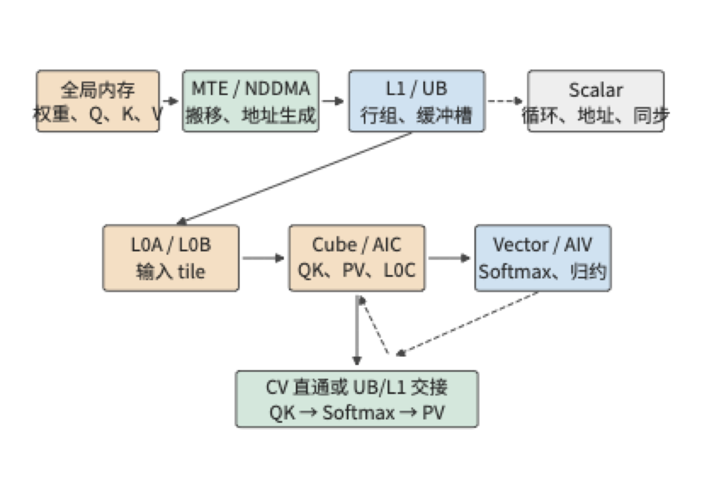
圖 4-3 DaVinci 注意力資料路徑。
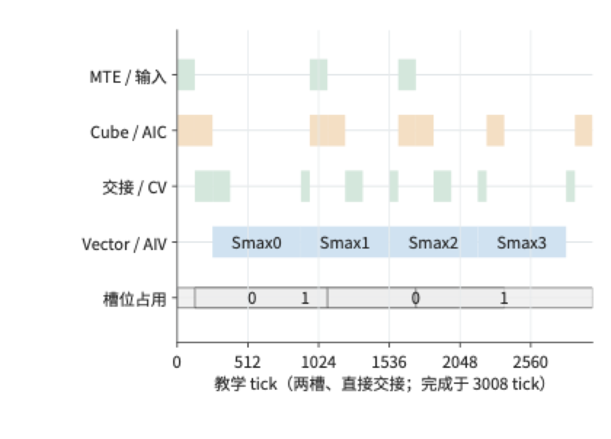
圖 4-23 QK、Softmax 與 PV 的雙槽執行時間線。
4.1 從模型計算認識加速器¶
分析運算子時，首先要確定它執行哪些運算、讀寫哪些資料。本節從這兩項需求出發，認識加速器的組成，並初步分析計算單元、儲存和介面之間的取捨。
4.1.1 矩陣乘法的計算與資料需求¶
Qwen3-8B 的隱藏維度為 4,096，32 個查詢頭各有 128 個分量，Q 投影的輸出寬度也是 4,096。一次處理 \(M\) 個 token 位置時，投影為
在投影 \(Y=XW\) 中，\(M\) 是本次處理的 token 總數，每個 token 的特徵向量佔 \(X\) 的一行；\(K\) 是每個輸入向量的特徵數，也是權重矩陣 \(W\) 的行數；\(N\) 是每個輸出向量的特徵數，也是 \(W\) 的列數；本例 \(K=N=4096\)。這組大寫字母描述矩陣形狀，與第 1 章容量記號 \(M\) 的語境不同。若一次處理 \(B\) 條等長請求、每條有 \(P\) 個新輸入 token，prefill 的 \(M=BP\)；單步 decode 為每條請求處理一個 token，因此 \(M=B\)。兩個階段使用同一份權重，完成相同的線性變換，區別在於每次有多少行輸入共同使用它。1
每個輸出元素都需要計算一個長度為 4,096 的內積。將一次乘法和一次加法計為兩個浮點操作，矩陣乘法計算量為
再看資料。輸入、權重與輸出均為 BF16，每元素兩位元組；累加器從零開始，以 FP32 儲存部分和，每元素四位元組。輸入與權重各從片外讀取一次，最終結果寫回一次，總讀寫量為
第一項是固定的 32 MiB 權重，第二項是隨行數增長的輸入與輸出。這裡 MiB 為 \(2^{20}\) bytes，頻寬規格中的 GB/s 使用 \(10^9\) bytes/s。將計算量除以存取量，得到算術強度 \(I=F/V\)。
| 一次 Q 投影 | \(M=1\) | \(M=256\) |
|---|---|---|
| 矩陣乘法計算量 | 約 33.6 MFLOPs | 約 8.59 GFLOPs |
| 權重讀取 | 32 MiB | 32 MiB |
| 輸入讀取與輸出寫回之和 | 16 KiB | 4 MiB |
| 總存取量 | 約 32 MiB | 36 MiB |
| 算術強度 | 約 1 FLOP/byte | 約 228 FLOPs/byte |
圖 4-1 將權重讀取分攤到輸入行：單行獨自承擔 32 MiB，256 行則每行分攤 128 KiB。
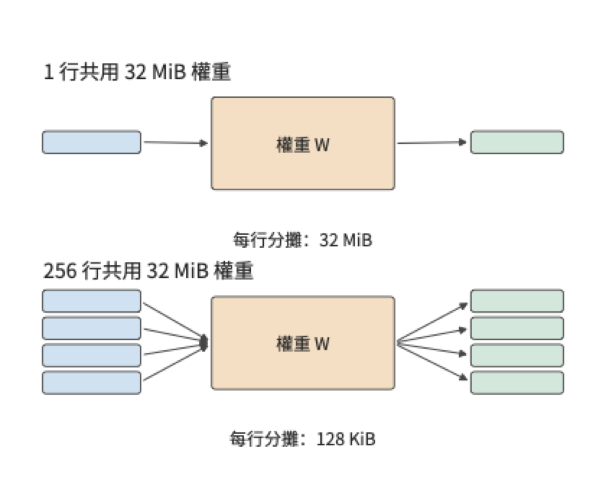
圖 4-1 兩種呼叫都使用同一份 32 MiB 權重。上方是一行輸入，下方以部分條帶示意 256 行；每行分攤的權重讀取從 32 MiB 減至 128 KiB。
行數增至原來的 256 倍，運算次數也增至 256 倍，存取量卻只增加約八分之一。權重複用使計算量增長快於存取量，算術強度隨之提高。2
將算術強度的分子、分母同除以 \(M\)，可以進一步求出複用的極限：
隨著 \(M\) 增長，每行分攤的權重項 \(2KN/M\) 不斷縮小，輸入輸出項保持不變。對本例，\(I(M)\) 最終趨近 2,048 FLOPs/byte。因此，繼續增大 batch 的收益會逐漸減小：每行分攤的權重讀取量雖然越來越少，但新增 token 的輸入和輸出仍然需要讀寫。
上述計算假定權重只讀一次；要在硬體上做到這一點，就需要在使用期間儲存運算元和中間結果。
4.1.2 加速器的組成與分工¶
主機（host）通常是執行框架、準備輸入併發起任務的 CPU 一側，加速器負責執行模型計算；在主機—裝置（host–device）的程式設計介面中，加速器一側通常稱為裝置。對有獨立視訊記憶體的 GPU，主機記憶體和視訊記憶體是兩處儲存。執行投影前，輸入與權重先放到加速器可存取的位置；CPU 隨後提交命令，給出運算子、資料地址與執行參數。資料已經駐留時，後續呼叫可以反覆引用同一地址。
圖 4-2 展示了加速器內部各部分如何協作完成一次矩陣乘法。片外記憶體儲存較大的輸入和權重；共享快取是由多組計算單元共同存取、自動保留近期資料的儲存；區域性緩衝是分配給當前計算組暫存輸入的儲存；矩陣單元反覆更新部分和；累加儲存把部分和留到本塊計算結束。向量與通用計算單元負責結果變換、地址計算和流程控制等工作。
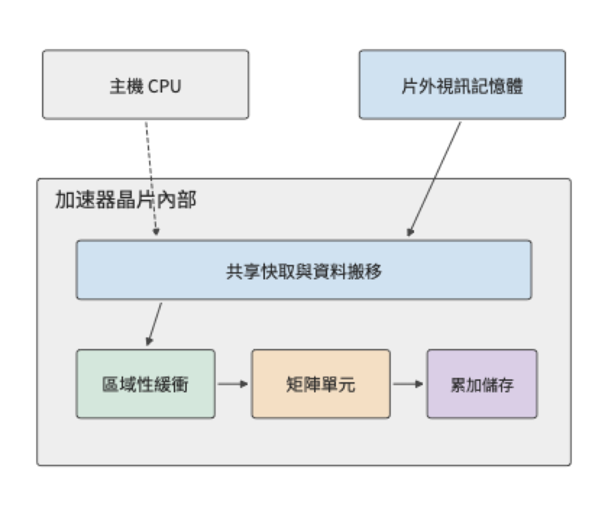
圖 4-2 主機、視訊記憶體與晶片內部的關係。實線表示資料經過快取、區域性緩衝、矩陣單元和累加儲存，虛線表示主機提交工作。圖按硬體功能分組。
計算一個輸出塊時，需要沿 K 維依次讀入多塊輸入和權重。每完成一次乘加，部分和仍留在累加儲存中，下一塊繼續更新它。如果每次更新都寫回片外，中間結果就要反覆寫出、讀入；把部分和留在片上，這些存取就只剩最後一次寫回。資料重複使用的次數越多，留在片上就越有價值。
NVIDIA 把一組可協作執行的執行緒、通用計算單元、矩陣單元與區域性儲存組織為流式多處理器（Streaming Multiprocessor，SM），其中矩陣乘加單元稱為 Tensor Core。SM 內由執行緒協作使用、由軟體管理的緩衝稱為共享記憶體（shared memory）。執行緒是程式中分別執行指令的工作單位；一次提交到加速器上執行的函式稱為 kernel（核心），一個 kernel 可以由許多執行緒協作執行。昇騰 DaVinci 架構中的 Scalar、Vector、Cube 和 MTE 則分別指控制單元、向量計算單元、矩陣計算單元與資料搬移單元。Apple 的 Metal 是提交 GPU 工作的程式設計介面，用執行緒組組織能夠共享區域性儲存並同步的執行緒。雖然名稱不同，這些部件都要解決幾個共同問題：運算元如何到達執行單元，結果如何儲存，下一項工作何時可以開始。3
沿圖 4-2 中的箭頭可以區分兩種等待。一種是資料尚未到達，例如輸入塊仍在傳輸；另一種是前一項計算尚未結束，例如 Softmax 正在等待查詢與鍵的點積（QK）完成。增加頻寬能夠縮短第一類等待，改變分塊或執行順序能夠改變第二類等待。後續各節將分別展開這兩種機制。
這些部件各分到多少資源，並非一次確定。模型與晶片在一代代設計中相互影響。現有加速器的能力影響模型的狀態大小、矩陣形狀和通訊方式，軟體透過壓縮、融合和並行提高執行效率；當某種負載長期佔據較大比重，晶片設計者便會考慮為它增加專用能力。新一代晶片投入使用後，不同模型的執行成本又會隨之改變。設計和製造都需要時間，所以硬體回應的是此前已經觀察到、並且預計會延續的需求。第 4.6 節將沿三家架構的代際變化，具體展開圖 4-3 中的每一段關係。
這種回饋已有公開的實例。DeepSeek V3 報告針對 H800 上的執行瓶頸，提出通訊卸載、跨互聯的一致操作、低精度累加和量化支援等硬體需求；其中，通訊卸載源於部分 SM 被通訊佔用。36
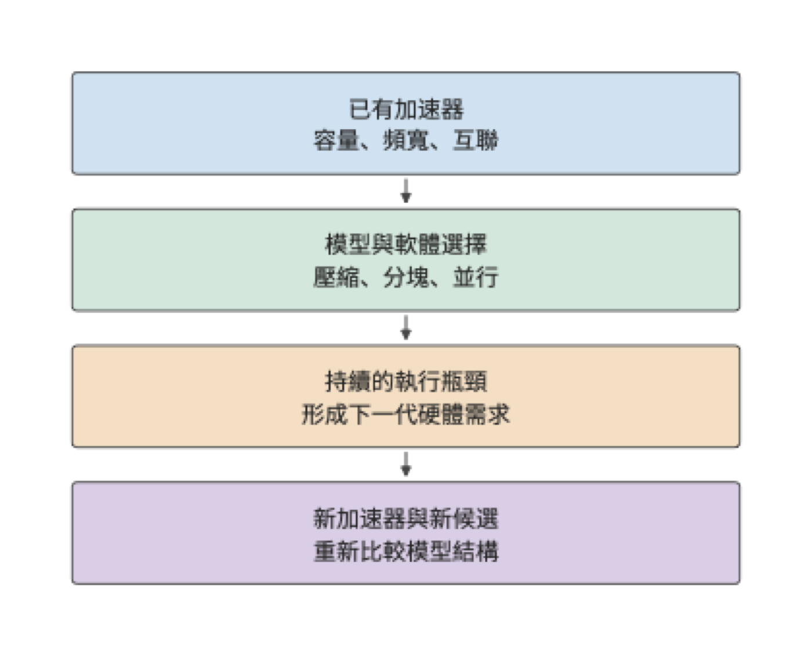
圖 4-3 模型與硬體跨代協同。實線沿時間向下：現有加速器影響模型選擇，軟體執行暴露長期瓶頸，硬體設計回應這些需求，新加速器使更多模型方案成為可能。
4.1.3 晶片面積、功耗與封裝的限制¶
計算單元、儲存器和介面都佔用晶片面積，也都消耗電能。分給某一部分的資源越多，留給其他部分的預算就越少。因此，評價一項區域性改進，要看整個任務能縮短多少時間。
將開篇算例推廣：以 \(f\) 表示依序執行任務中可加速部分的時間比例，\(s\) 表示其加速倍數，根據第 1.2.1 節的 Amdahl 定律，整體加速比為：
繼續把矩陣速度提高到原來的四倍，總時間降至 \(60/4+40=55\) μs。第一次翻倍節省 30 μs，第二次只節省 15 μs；即使矩陣計算時間趨近於零，其餘工作仍需 40 μs。整體加速上限為 2.5 倍。剩餘工作在新總時間中所佔比例越來越大，資源投入的重點也隨之改變。
早期 TPU 的面積分配反映了計算與儲存之間的實際取捨。TPU 是 Google 設計的張量處理器。第一代 TPU v1 具有 \(256\times256\) 個 8-bit 乘加單元、24 MiB 的統一資料緩衝（Unified Buffer）和 4 MiB 累加儲存。TPU v1 論文給出的晶片面積分布中，資料緩衝約佔 37%，計算單元約佔 30%，控制電路約佔 2%。緩衝佔用的面積甚至超過計算單元，因為陣列需要反覆使用輸入、權重和部分和。如果每次都從片外讀取，乘加器就會長時間等待資料。4
假設為了增加乘加器，設計者縮小了緩衝容量。原來能留在緩衝中的輸入塊被提前移除，下次使用時要再次載入；重複讀取增加的時間，可能抵消新增乘加器帶來的收益。反過來，為極少重複使用的資料設定過大的緩衝，也會佔用本可用於計算的面積。比較設計方案時，要計算同一任務在改動前後的總時間，把計算加快與重複讀取增加的影響一起考慮。
思考：繼續增加矩陣算力，還是加速其餘工作？ 在上述 60 μs 加 40 μs 的任務中，以原始矩陣運算速度為基準，把加速比從兩倍提高到四倍，和把其餘工作從 40 μs 降到 25 μs，哪種改動節省的時間更多？如果兩者面積代價不同，應怎樣選擇？
面積之外，功耗是另一項預算；晶片越大、卡越多，功耗越容易成為決定性的約束。下面用四個推導把功耗變成可以計算的量：資料搬移為什麼耗電，各級儲存每搬一個位元組耗多少能量，一顆晶片能做多大、能接多少記憶體，以及功率上限如何壓低實際執行的頻率。
搬移為什麼耗電。 搬移資料的能耗來自給連線充放電。數位電路的功耗分為靜態與動態兩部分：靜態功耗是與翻轉無關的漏電，動態功耗產生於訊號在 0 與 1 之間的翻轉。據何庭波的 LogicFolding 論文，智慧手機典型負載中動態功耗約佔九成。50 一條訊號線連同其驅動的門可以看成一個電容 \(C\)，從 0 充到電壓 \(V\)，電源要提供 \(CV^2\) 的能量。設每個時鐘週期中發生翻轉的訊號所佔比例為 \(\alpha\)、時脈頻率為 \(f\)（這裡的 \(f\) 是頻率，不是前文 Amdahl 定律中的比例），動態功耗為
在先進工藝下，\(C\) 的主要部分不是電晶體的柵極，而是連線：金屬線的電容沿長度分佈，訊號走得越遠，要充放電的電容就越大。圖 4-4 上半部分畫出這一機制：同一個門驅動一條數百微米的橫向連線，要給沿途全部分佈電容充電；把電路摺疊到上下兩層後，原來的橫向路徑變成幾微米的垂直連線。論文報告摺疊後典型核心的連線長度縮短 20%，部分關鍵路徑縮短 70%，一個處理模組的時鐘緩衝器從 43,600 個減到 19,000 個。
論文中的兩個例子可以用這條公式直接手算。第一個是 NPU 的同效能比較：同樣完成 29 TOPS（每秒 29 萬億次運算）時，摺疊後的 NPU 把電壓從 0.85 V 降到 0.55 V。只看電壓項，
只看頻率項，頻率降低 63%，\(f\) 變為原來的 0.37。電壓項與頻率項相乘得 \(0.42\times0.37\approx0.16\)，遠低於論文報告的總功耗比 0.34（下降 66%）。差距來自並行度：前代 NPU 是一個大核心加兩個小核心，摺疊後是四個大核心（論文 §V），靠更多並行核心在低頻下完成同樣的 29 TOPS。核心增多，每週期翻轉的電容 \(\alpha C\) 隨之增加，抵消了連線縮短帶來的 \(C\) 減少。電壓、頻率與並行度三項合起來才得到 0.34，其中電壓項貢獻最大，這也是論文認為降壓的貢獻大於連線縮短的原因。
第二個例子是 DSP（數字訊號處理器）：第一代摺疊讓功耗降到原來的 0.75，投影面積（晶片在平面上佔的面積）降到 0.60，於是單位面積的功耗，即功率密度，變為
比原來高 25%，與論文報告的 24% 一致。熱量要從晶片面積上散出去，所以總功耗下降，散熱壓力未必減小。圖 4-4 下半部分並列展示這兩個例子的數字。
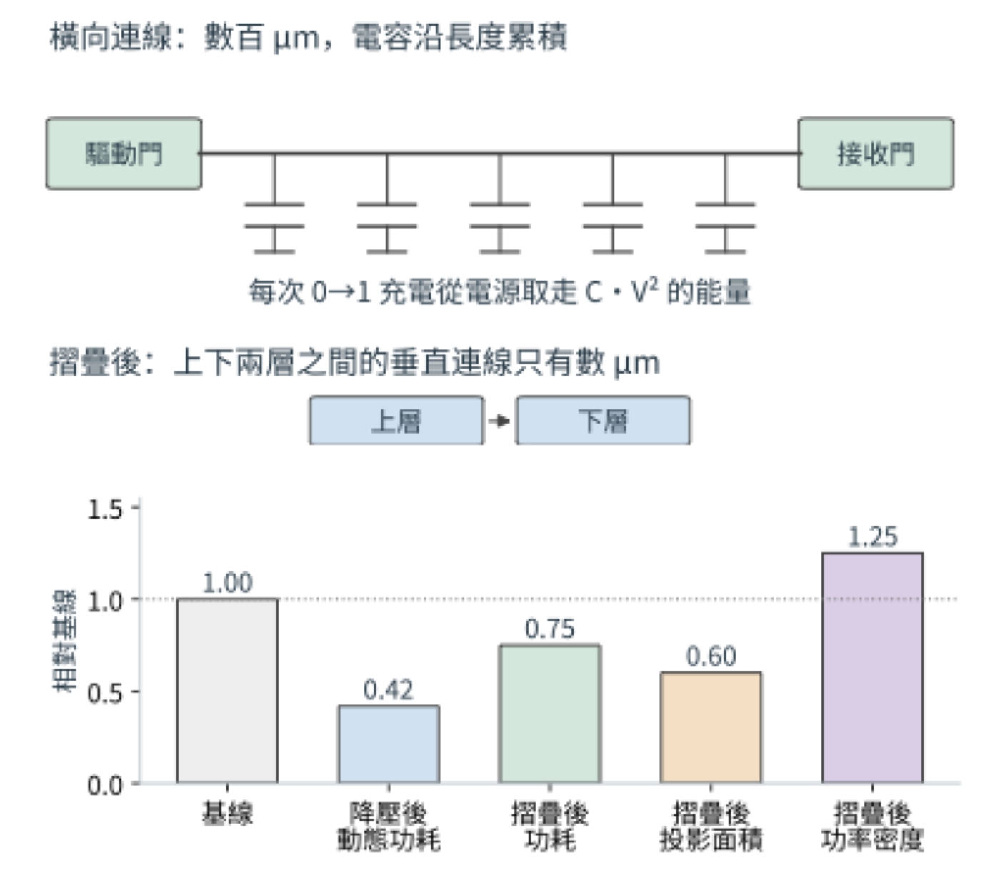
圖 4-4 上：同一驅動門經數百微米橫向連線傳送訊號，要給沿線分佈電容充電；摺疊後改為數微米的垂直連線。下：電壓從 0.85 V 降到 0.55 V 使動態功耗降到 0.42；功耗降到 0.75 而投影面積降到 0.60，功率密度反而升到 1.25。
翻轉條件（使結論反過來的臨界條件）：只有面積比不小於功耗比時，功率密度才不上升；本例面積比 0.60 小於功耗比 0.75，功率密度上升。
能耗層次：每搬一個位元組要花多少能量。 能耗取決於要充放電的電容，電容又隨距離增長，所以同一個位元組從遠近不同的儲存層次取來，能耗相差懸殊。下表列出各級儲存與鏈路每位元組的能耗：SRAM（靜態隨機存取儲存器）做在晶片上，HBM 與 LPDDR（低功耗 DRAM）都是片外的 DRAM（動態隨機存取儲存器），NVLink-C2C 是 Grace Hopper 超級晶片中連線 CPU 與 GPU 的晶片間鏈路。單位 pJ 即皮焦耳（\(10^{-12}\) J）。數值來自四份資料，表中一併列出各自的工藝與年份。51
| 層次 | 來源數值 | 每 byte 能耗 | 工藝與年份 |
|---|---|---|---|
| KB 級區域性 SRAM | 5 pJ／32 位字 | 1.25 pJ | 45 nm，Horowitz ISSCC 2014，Dally Hot Chips 2023 轉引 |
| MB 級片上 SRAM | 50 pJ／32 位字 | 12.5 pJ | Dally Hot Chips 2023 第 52 頁，工藝未註明 |
| NVLink-C2C 鏈路 | 1.3 pJ/bit | 10.4 pJ | Grace Hopper 超級晶片，NVIDIA 2022 年 11 月技術部落格 |
| HBM2 | 3.97 pJ/bit | 31.76 pJ | 28 nm DRAM 能耗模型，MICRO 2017 |
| LPDDR DRAM | 640 pJ／32 位字 | 160 pJ | 45 nm，Horowitz ISSCC 2014 |
| 16 位浮點乘加（2 FLOPs） | 1.5 pJ／次 | 0.75 pJ/FLOP | 45 nm，Dally Hot Chips 2023 |
HBM2 每 bit 的能耗大部分消耗在 DRAM 內部，而非通往 GPU 的連線上。die（裸片）是從晶圓上切下的一塊矽片。按 MICRO 2017 論文的分解，DRAM die 內部從儲存陣列到基底 die（HBM 堆最底層的 die）的資料通路佔 2.24 pJ/bit，行啟用（開啟儲存陣列中的一行）佔 1.21 pJ/bit，經中介層（interposer，承載晶片之間連線的一塊矽片）送到 GPU 的 I/O 只佔 0.3 pJ/bit。三項合計 3.75 pJ/bit，計入 ECC（糾錯碼）等開銷後為 3.92 pJ/bit；該論文正文給出的總數是表中的 3.97 pJ/bit。NVLink-C2C 的 1.3 pJ/bit 則只計鏈路本身，經它取來的資料還要先從對側記憶體讀出。
把這張表用到第 4.8.3 節的生成任務上：Qwen3-8B、BF16、單請求、8K 上下文，一步 decode 讀取權重 15.137 GB、KV 1.208 GB，合計 16.345 GB，矩陣運算量為 19.97 GFLOPs。按表中 HBM 行與乘加行計算，52
合計 0.534 J，其中權重讀取佔 90%：單請求 decode 的能量幾乎全部消耗在搬移上。HBM 行取自 28 nm 工藝的 HBM2 能耗模型，計算行取自 45 nm 邏輯工藝的乘加能耗，兩行工藝不同，所以這筆賬給出的是搬移與計算兩類能量的量級比較。這一步的時間則受頻寬限制：按 3.35 TB/s 讀完這 16.345 GB 需要 4.9 ms，0.534 J 平攤到這段時間只有約 110 W。圖 4-5 下半部分假設同樣的 16.345 GB 全部來自某一層次：KB 級 SRAM 只需 0.020 J，MB 級 SRAM 0.204 J，NVLink-C2C 鏈路 0.170 J，HBM 0.519 J，LPDDR 則為 2.62 J。
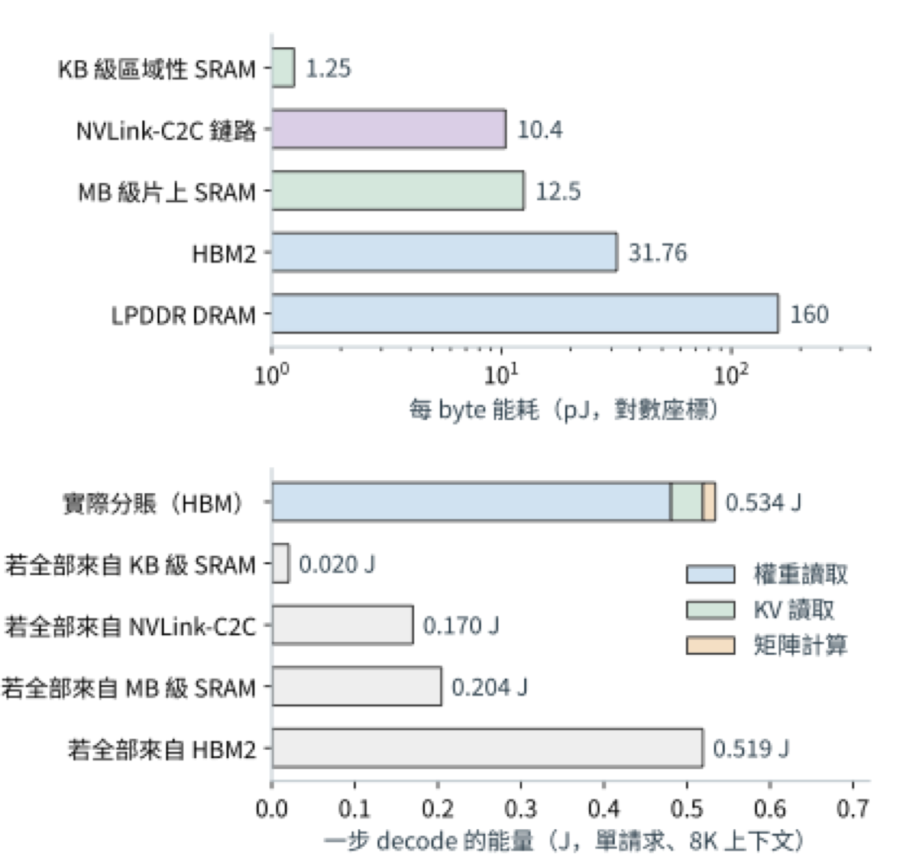
圖 4-5 上：各級儲存與鏈路每 byte 能耗，對數座標。下：Qwen3-8B 單請求 8K decode 一步的能量分賬（權重 0.481 J、KV 0.038 J、計算 0.015 J），以及同樣 16.345 GB 全部來自某一層次時的能量。
頻寬只決定一步多快，不改變一步耗多少能量：HBM 頻寬提高一倍，這一步的時間減半，0.534 J 不變。降低能量只有兩條途徑：讓位元組從更近的層次取來，或者讓同一份位元組服務更多 token。batch 為 \(B\) 時，權重讀一次服務 \(B\) 個 token，每 token 的能量為 \(0.481/B+0.038+0.015\) J；\(B=32\) 時約 0.068 J，是單請求的八分之一。因此，資料複用首先是能耗問題，其次才是頻寬問題。第 4.8.1 節按時間求出的轉折點由頻寬與算力之比決定，這裡的轉折點由每位元組能耗與每 FLOP 能耗之比決定，兩者並不相同。
翻轉條件：\(0.481/B<0.015\)，即 batch 超過 32 後，每 token 的權重搬移能耗才低於計算能耗。
光罩與封裝：一顆晶片能做多大，能接多少記憶體。 光刻機一次曝光只能覆蓋一塊光罩（reticle，曝光用的掩模版）的圖形範圍，該面積稱為光罩上限，單顆 die 不能超過它。H100 的 die 為 814 mm²，A100 為 826 mm²，兩代都貼近這一上限；Blackwell 資料中心 GPU 的兩顆 die 各自做到光罩上限，再用 10 TB/s 的 NV-HBI 鏈路連成一顆晶片。53 晶片分成兩顆 die 後，計算放在哪一側決定有多少存取要經過這條鏈路，第 4.5.1 節會具體計算。
HBM 把多層 DRAM die 疊在一顆基底 die 上，用矽通孔（TSV，穿過矽片的垂直導線）連線各層，整堆經中介層上的連線接到 GPU。每堆有 1,024 根資料引腳，引腳速率為 \(r\) 時，每堆的頻寬與容量為
以 HBM3E 為例：Micron 的八層堆每堆 24 GB、十二層堆 36 GB；SK hynix 給出的引腳速率 9.6 Gbit/s 代入上式得 \(1024\times9.6/8\approx1229\) GB/s，與其產品頁的 1.23 TB/s 一致。圖 4-6 畫出這種封裝：die 居中，HBM 堆沿 die 邊緣排列，中介層承載兩者之間的連線。用同樣的公式反推三代 GPU 的 HBM 設定：
| GPU | 容量 | 頻寬 | 堆數 | 每堆容量 | 每堆頻寬 | 引腳速率 |
|---|---|---|---|---|---|---|
| H100 SXM5 | 80 GB | 3,350 GB/s | 5，白皮書給出 | 16 GB | 670 GB/s | 5.24 Gbit/s，白皮書給出 2619 MHz DDR（雙倍資料速率，每個時鐘週期傳輸兩次） |
| H200 SXM | 141 GB | 4,800 GB/s | 6 堆共 144 GB，產品可用容量 141 GB | 24 GB | 800 GB/s | 6.25 Gbit/s，推算 |
| B200（HGX） | 180 GB | 8,000 GB/s | 8 堆共 192 GB，產品可用容量 180 GB | 24 GB | 1,000 GB/s | 7.81 Gbit/s，推算 |
表中各代的增長都可以拆到堆數、每堆容量和引腳速率上。H100 的 5 堆構成 5,120 位介面，5,120 位乘以 5.24 Gbit/s 再除以 8，約為 3,350 GB/s。H100 到 H200，容量增長 76%，來自每堆從 16 GB 換成 24 GB、堆數從 5 增到 6；頻寬增長 43%，來自多出的一堆和引腳速率從 5.24 Gbit/s 提高到 6.25 Gbit/s。H200 到 B200 又增加兩堆：H100 與 H200 都只有一顆 die，分別接 5 堆和 6 堆；B200 的 8 堆沿兩顆光罩上限 die 的外側排列（圖 4-6）。堆數由 Blackwell 技術簡報中 192 GB、7.7 TB/s 的設定按每堆 24 GB 推得；本書其餘各節採用 HGX B200 平台每 GPU 180 GB、8 TB/s 的規格。
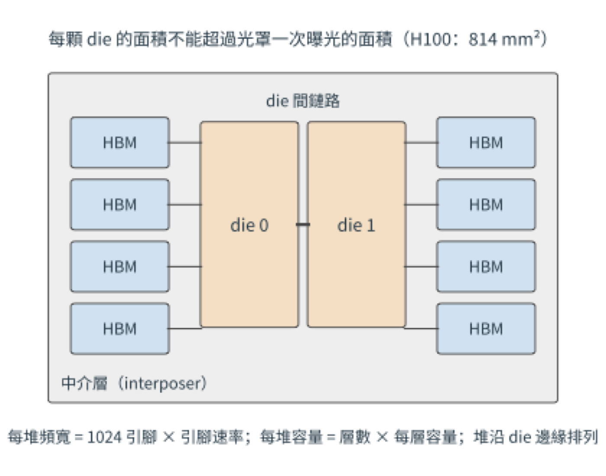
圖 4-6 封裝俯視示意：兩顆達到光罩上限的 die 居中，八堆 HBM 沿兩側邊緣排列，中介層承載 die 與 HBM 之間以及 die 之間的連線。每堆頻寬由 1,024 根引腳與引腳速率決定，每堆容量由層數與每層容量決定。
翻轉條件：所需堆數（目標容量除以每堆容量）超過一顆 die 所接的堆數時，要麼增加每堆層數，要麼增加 die；換成十二層 36 GB 的堆，六堆就有 216 GB，不必增加堆數。
功率封頂：峰值算力為什麼不能持續。 熱設計功耗（thermal design power，TDP）是模組允許的最大持續功率，H100 SXM 為 700 W，B200 為 1,000 W。54 這份功率由記憶體與計算共用。以 H100 為例，按上表 HBM2 行的每位元組能耗估算，HBM 滿頻寬的功率為 \(3.35\ \mathrm{TB/s}\times31.76\ \mathrm{pJ/byte}\approx106\) W，扣除後留給計算的是 594 W；除以 BF16 稠密峰值 989.4 TFLOP/s，得到峰值速率下每 FLOP 的能量預算
0.60 pJ/FLOP 的預算只有靠矩陣指令與工藝進步才能滿足，45 nm 的參考值說明了原因。一條標量半精度乘加指令（HFMA）做 2 FLOPs 耗 1.5 pJ，即 0.75 pJ/FLOP，本身已超過預算；取指、譯碼與取運算元另有約 30 pJ 的開銷，是運算能量的 20 倍。一條 HMMA 矩陣乘加指令耗 110 pJ，完成的 FLOPs 遠多於 2，同樣的指令開銷攤下來只佔 22%。51 H100 採用 TSMC 4N 工藝；從 45 nm 到 4N，每次翻轉的電容與電壓一代代降低。
設實際每 FLOP 能耗為 \(e\)。\(e\le b\) 時，峰值頻率可以持續；\(e>b\) 時，功率控制器會降低頻率，降到多少由 \(P\propto fV^2\) 決定：電壓不變時，功率隨頻率線性下降，持續頻率為峰值的 \(b/e\)；電壓隨頻率同步下降時，\(P\propto f^3\)，持續頻率為峰值的 \((b/e)^{1/3}\)。圖 4-7 畫出這兩條曲線：\(e\) 為預算的 1.5 倍時，前者降到 0.67，後者只降到 0.87。持續算力隨頻率等比例下降，所以按峰值算力預測的計算時間比實際短。峰值算力是硬體的物理極限，卻不是在任何條件下都能達到：功率封頂時，極限本身隨持續頻率一起下移，此時衡量利用率應當以持續算力為分母。
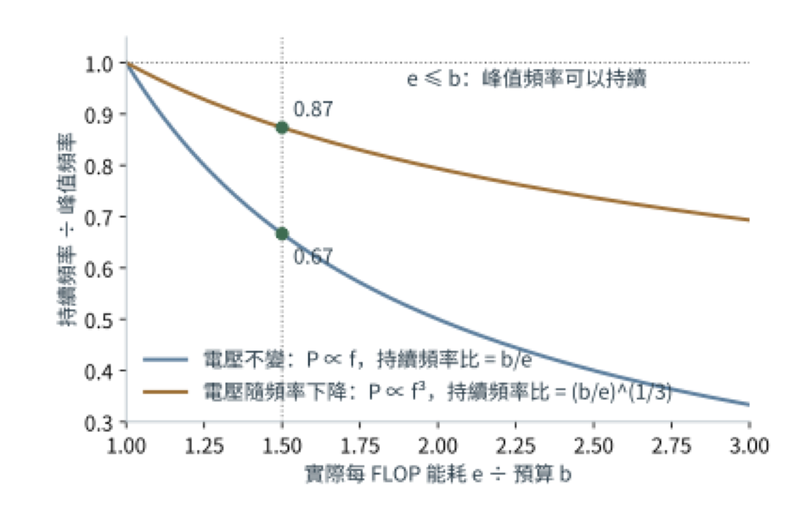
圖 4-7 持續頻率與峰值頻率之比隨每 FLOP 能耗 \(e\) 與預算 \(b\) 之比的變化：電壓不變時為 \(b/e\)，電壓隨頻率下降時為 \((b/e)^{1/3}\)。\(e/b\) 不超過 1 時峰值頻率可以持續；\(e/b\) 為 1.5 時兩條曲線分別給出 0.67 與 0.87。
翻轉條件：每 FLOP 能耗低於 \((\mathrm{TDP}-P_{\mathrm{mem}})/F_{\mathrm{peak}}\) 時，峰值頻率可以持續；其中 \(P_{\mathrm{mem}}\) 是記憶體功率，\(F_{\mathrm{peak}}\) 是峰值算力，本例這一閾值為 0.60 pJ/FLOP。工藝每前進一代，每 FLOP 能耗下降；TDP 也逐代抬高；兩者共同決定這一條件何時滿足。
4.2 計算單元¶
第 4.1 節用運算速率表示矩陣單元的效能。本節解釋這一速率從何而來：一條指令處理多大的矩陣，為什麼小矩陣難以充分利用計算單元，以及矩陣結果還要經過哪些向量與控制操作。
4.2.1 矩陣單元為什麼適合神經網路¶
大矩陣要拆成許多小塊計算，矩陣單元正是執行這些小塊的硬體，其支援的矩陣指令形狀有限，程式要把大任務組織成相應的小步；一張加速卡上的多個計算單元可以同時處理不同塊。
計算一個 \(m\times n\) 輸出塊時，同一行輸入參與 \(n\) 個輸出元素的計算，同一列權重參與 \(m\) 個輸出元素的計算。矩陣單元讓多個乘加單元共享這些運算元：資料在相鄰計算單元間傳遞，部分和留在本地更新。一條指令描述整塊工作，控制成本也由大量運算共同分攤。第 5 章將進一步說明，軟體如何組織塊大小和遍歷順序，讓這些小步持續取得所需資料。
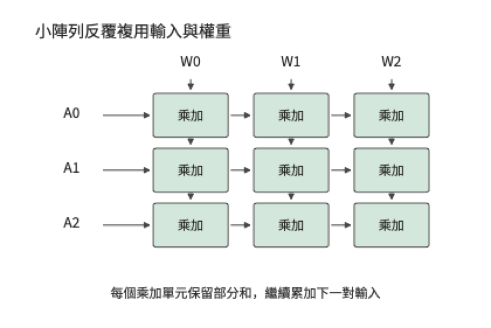
圖 4-8 三行三列的乘加陣列示意。輸入沿行傳遞，權重沿列傳遞，每個乘加單元保留自己的部分和。這裡用小陣列解釋運算元複用。
以一次 \(16\times16\times16\) 的矩陣操作為例，兩個輸入塊各有 256 個元素，完成 \(2\times16^3=8192\) 次浮點操作。每個輸入元素在塊內參與 16 次乘法。與每個輸出各自取一遍全部運算元相比，這種方式減少了重複搬移和指令開銷。
矩陣指令通常按固定大小的塊執行。設某種實作的最小計算塊為 \(m_t\times n_t\times k_t\)，矩陣尺寸不足整塊的部分用零補齊。有效運算佔實際執行運算的比例為
若行方向最小為 16，真實矩陣只有一行，其餘維度均對齊，則 16 行中只有一行包含有效輸入。把矩陣單元數量翻倍，會同時加快有效計算和補零計算；改用適合單行的矩陣向量乘法（GEMV）實作，則可以減少補零造成的無用計算。庫如何選擇實作，見第 4.8 節的實測。
專家模型讓行數問題更加突出。設 64 個 token 各選擇八個專家，共有 512 次分派；各專家矩陣尺寸相同。如果分派恰好均勻覆蓋 256 個專家，每個專家只處理兩個 token 的特徵向量；如果全部 token 選擇同樣的八個專家，每個專家處理 64 個 token 的特徵向量。兩種情況下，64 個原始 token 都產生 512 次專家分派，在各專家輸入矩陣中合計佔 512 個有效行。
繼續使用行方向按 16 補齊的實作。前一種分派執行 \(256\times16=4096\) 行，其中 512 行有效；後一種執行 \(8\times64=512\) 行，全部有效。兩種分派的有效計算量相同，補齊後前一種的執行量卻是後一種的八倍。一批 token 選中了哪些專家，既決定需要讀取哪些權重，也決定每個專家處理多少行，從而影響矩陣單元的利用率。
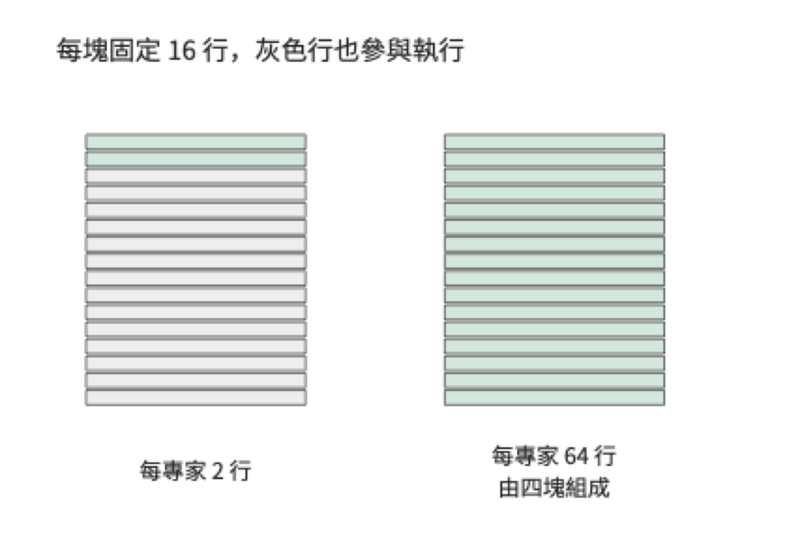
圖 4-9 一個專家的 16 行計算塊。每專家只有兩行時，剩餘十四行填零；每專家有 64 行時，可組成四個完整塊，圖中展示其中一塊。
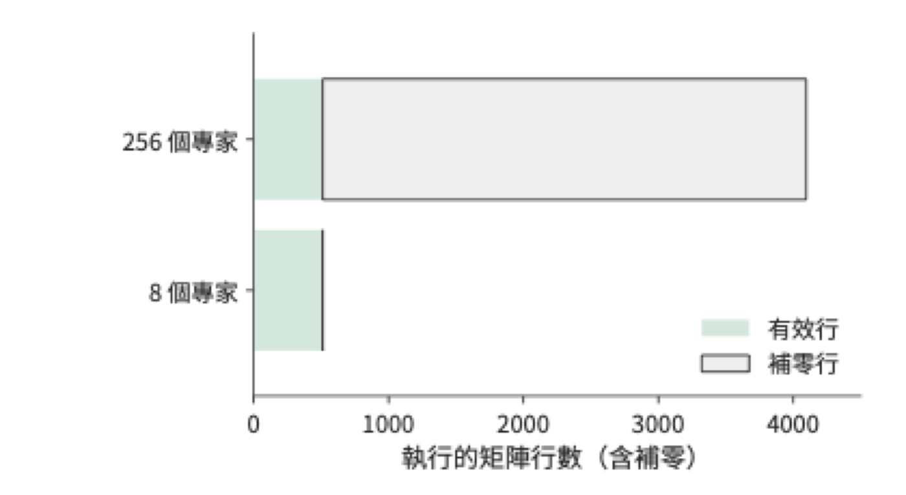
圖 4-10 相同 512 行有效輸入在全部專家上的執行量。分散到 256 個專家後總計執行 4096 行，集中到八個專家時只執行 512 行。
圖 4-9 與圖 4-10 中淺灰部分是補零帶來的計算，增加乘加器也會加快這些無用操作。減少淺灰部分則要改變每個專家的輸入行數或選擇更小的計算塊。
這解釋了為什麼庫為不同形狀準備多種 kernel：大矩陣利用陣列複用，小矩陣需要更合適的執行粒度，多個小任務還可以透過分組減少排程空隙。Tensor Core 與昇騰 Cube 專門執行規則矩陣運算，通用執行單元保留對其他形狀的處理能力；兩者配合處理實際負載中大小不同的矩陣。5
4.2.2 矩陣計算之間的向量運算與控制¶
除了矩陣乘法，Transformer 層還包含歸一化、位置編碼和活化函數；專家模型還要做路由。這些步驟包含逐元素運算，也包含多個元素之間的依賴。
以一行有 \(n\) 個分數的 Softmax 為例，為保證數值穩定，先求最大值，再計算平移後的指數，最後求和並歸一化：
\(n=128\) 時，需要計算 128 個指數值，並對 128 個結果歸一化；求最大值和求和則要分別合併 128 個輸入。逐元素運算可以分配給多個計算單元並行執行；把多個元素合並為較少結果的操作稱為歸約，例如求和或求最大值；歸約需要逐步合併各單元的結果。理想二叉歸約經過 \(\log_2 128=7\) 輪，每輪等待上一輪結果。增加平行計算單元可以縮短每一輪的處理時間，但各輪仍需依次進行。
向量單元承擔這類逐元素和歸約工作，特殊函式單元處理指數等操作，控制邏輯安排迴圈、地址、分支和同步。三者共同決定矩陣結果何時能交給後續計算使用。昇騰的 Cube、Vector、Scalar 命名直觀地體現了這種分工；昇騰 950 白皮書中的一個 AI 子系統由一個 Cube Core 和兩個 Vector Core 組成，向量部分採用以單指令多資料（SIMD，即一條指令對一組資料執行同樣操作）為主、單指令多執行緒（SIMT，即把同一指令分派給一組各有執行狀態的執行緒）為輔的執行方式。6
Softmax 的分數隨輸入變化，需要每次重新求指數；另一些非矩陣運算使用的係數只隨位置變化，可以預先計算並反覆使用。RoPE 使用固定位置的正弦、餘弦係數，對一對分量執行
Qwen3-8B 一層的 32 個 Q 頭和 8 個 K 頭，每頭旋轉 128 維，共有 \((32+8)\times64=2560\) 對分量。每對需要四次乘法、兩次加減，每個 token 共 15,360 FLOPs。各頭在同一位置使用相同係數，因而可以共享一張表：為 1,024 個位置各儲存 64 個 cos 和 64 個 sin，BF16 儲存只需 \(1024\times128\times2=256\) KiB。7
預計算把重複的三角函式求值轉成係數讀取，旋轉本身仍按每個 token 執行。壓力於是從特殊函式計算轉到表存取與向量運算上。
4.2.3 QK、Softmax 與 PV 如何組成流水線¶
注意力把前兩節的矩陣計算與向量計算連線起來：\(Z=QK^{\mathsf T}\) 生成分數，\(P=\operatorname{Softmax}(Z)\) 生成機率，\(O=PV\) 形成輸出。同一塊資料必須依次經過這三步；多個塊則可以在不同資源上交錯推進。
| 工作 | NVIDIA GPU | 昇騰 | Apple GPU |
|---|---|---|---|
| 查詢與鍵的點積 QK、機率與值的乘積 PV | Tensor Core；小矩陣可用通用計算單元 | 矩陣核 Cube（AIC） | Metal GPU 矩陣運算 |
| 指數、歸約、縮放 | SM 的通用與特殊函式資源 | 向量核 Vector（AIV） | GPU 執行緒與相應庫實作 |
| 中間狀態 | 暫存器、共享記憶體、累加儲存 | 計算單元近旁的零級緩衝（L0）、統一緩衝與交換通路 | GPU 緩衝與執行緒組儲存 |
這一分工決定哪些操作可以同時執行。例如，一個塊在處理指數時，矩陣單元可以處理另一個塊；但雙方若都要從同一個片上介面取運算元，該介面仍需依次提供全部位元組。哪些單元能夠並行工作、哪些操作共用同一介面，共同決定了流水線穩定執行時的吞吐率。表中的 Apple 路徑指 Metal GPU。獨立的神經網路加速單元 Neural Engine 與 GPU 內的專用單元在第 4.6.3 節分別介紹。8
FlashAttention 系列透過分塊減少注意力中間結果的視訊記憶體存取；第四版進一步研究更強矩陣單元下的計算分工。下面用 FlashAttention-4 對 NVIDIA Blackwell 架構 B200 單個 SM 的分析，計算這種分工對吞吐率的影響。取 \(128\times128\)、頭維度為 128 的矩形注意力塊，QK 與 PV 合計約 8.39 MFLOPs，指數結果有 16,384 個。按每個 SM 每週期 8,192 FLOPs 的矩陣速率和每週期 16 個結果的指數速率，兩者各需 1,024 週期。矩陣運算元的共享記憶體讀取為 96 KiB，按每週期 128 bytes，需要 768 週期。9
連續處理多個塊時，矩陣單元、共享記憶體介面和指數單元可以構成流水線；處理每個塊時，三者分別佔用 1,024、768 和 1,024 週期。若新塊到達的速度超過其中任一單元的處理速度，等待佇列就會不斷增長。因此，在流水線穩定執行後，相鄰兩塊完成的時間間隔至少為
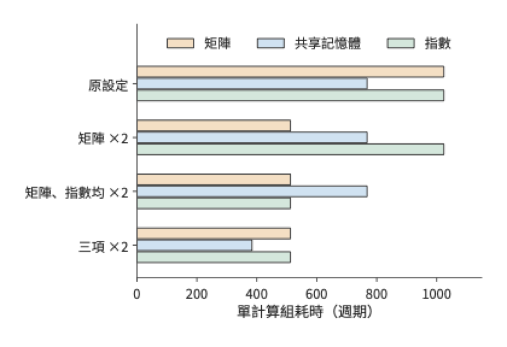
圖 4-11 同一注意力塊在四種資源設定下的服務週期。矩陣、共享記憶體和指數三項分別比較，單獨增加一種能力後，其他資源可能成為較長的一項。「×2」表示相應資源的吞吐能力提高一倍，橫軸為完成同一計算塊所需的時鐘週期數。
例 4-1：注意力流水的吞吐為何受指數運算與共享記憶體限制？
提高矩陣與指數吞吐率後，流水吞吐率能提高多少？ 多個塊在獨立資源間形成流水。比較兩種設定：僅將矩陣吞吐率翻倍；在此基礎上再將指數吞吐率翻倍。對每種設定，流水線穩定執行時，相鄰兩個塊最短隔多久完成？
由最慢單元確定相鄰資料塊的完成間隔。 原設定為 \(\max(1024,768,1024)=1024\) 週期。只提高矩陣能力，得到 \(\max(512,768,1024)=1024\) 週期；再提高指數能力，得到 \(\max(512,768,512)=768\) 週期。
矩陣加速後，瓶頸向指數運算與共享記憶體轉移。 第一項改動使矩陣單元更早完成，但指數運算的吞吐率保持不變，所以完成時間間隔的下界不變。第二項改動消除了指數的限制，共享記憶體成為耗時最長的單元，對應的理想吞吐提高到原來的 \(1024/768=4/3\) 倍。
共享記憶體頻寬翻倍後，瓶頸轉移到哪些單元？ 若共享記憶體頻寬也翻倍，三項變為 512、384、512 週期，下界才降到 512。新的均衡點由矩陣與指數共同決定。
提高一種資源的處理能力，可以減少等待，直到另一種資源成為瓶頸。對單個塊，QK、Softmax、PV 仍有先後關係；要達到上述完成時間間隔，需要同時儲存不同進度的多個塊。第 4.4 節將一併計算所需緩衝與時序。
實驗 4-1 · 核心：注意力分塊如何改變運算量與共享記憶體讀取量
將矩形塊改為 \(128\times256\) 和 \(256\times128\)，分別計算矩陣運算、指數運算和共享記憶體讀取所需的時間。再逐項提高矩陣運算吞吐率、指數運算吞吐率和共享記憶體頻寬，說明採用的提升幅度，並找出每次改動後耗時最長的一項。解釋塊形狀怎樣改變資料複用。最後選一種硬體，將三類工作與儲存位置標在執行圖上。
4.2.4 低精度如何改變計算量、資料量與轉換開銷¶
矩陣形狀決定做多少乘加，數值格式決定每次乘加使用什麼表示。分析低精度需要依次回答三個問題：資料佔多少空間，執行時經過哪些變換，誤差要求允許採用哪些變換。
先看錶示。若 \(n\) 個權重各存 \(b\) bit，每 \(g\) 個值共享一個 \(s\) bytes 的 scale，總元素數恰好能被分組大小整除時，儲存量為
對第 4.1.1 節的 \(4096\times4096\) 權重，每個值用 4 bit 儲存，每 32 個值共用一個佔一位元組的 scale：權重資料為 8 MiB，scale 為 0.5 MiB，共 8.5 MiB，約為 BF16 所需 32 MiB 的 1/3.8。若每 16 個值共用一個 scale，總量增為 9 MiB。分組越細，scale 越容易適應該組數值的範圍，但需要儲存的 scale 也越多。
再看執行。壓縮值 \(q\) 與 scale \(a\) 一起表示近似值 \(\hat w=aq\)。可以先展開成 BF16 再做矩陣乘法，也可以讓低精度矩陣指令處理 \(q\)，隨後按 scale 調整結果。圖 4-12 並列展示這兩種實作：前者先花時間展開權重，並儲存高精度副本，後者把縮放和合並放進執行過程。
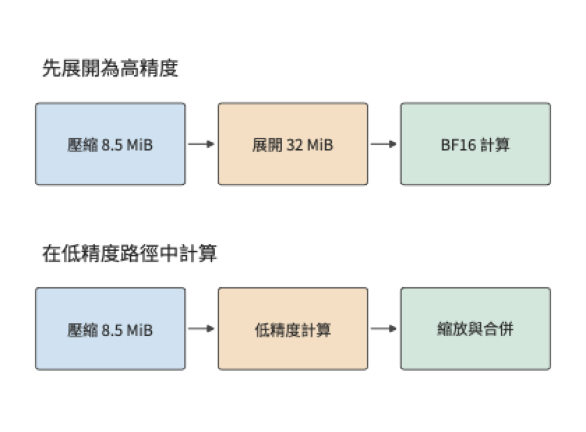
圖 4-12 相同壓縮權重的兩條計算路徑。先展開會形成 32 MiB 的 BF16 副本；低精度路徑在計算過程中完成縮放和合並。壓縮權重及 scale 共 8.5 MiB。
FP4、FP8 與八位整數格式 INT8 已進入實際模型的 kernel：DeepSeek V4-Flash 的一種路由專家實作先將 FP4 權重轉換為 FP8，再執行 GEMM。權重以 FP4 儲存和讀取，減少了傳輸位元組數；轉換後，矩陣單元按 FP8 格式計算。若展開後的權重需多次使用，一次轉換的時間就能分攤到多次呼叫；若每次呼叫都重新展開，轉換時間就成為每次任務的固定部分。低精度能節省多少時間，取決於節省的讀取時間與增加的轉換時間之差。10
配套實驗同時測量誤差與執行開銷，選用 Qwen3-VL-30B-A3B 的一個 \(2048\times1536\) 專家矩陣，比較兩種方法：直接用 INT8 分塊計算，以及先展開為 BF16、再完成一次矩陣乘法。實驗在 RTX PRO 6000 上執行，輸入來自實際專家路由。向量的 L2 範數是各元素平方和的平方根；用輸出誤差的 L2 範數除以參考輸出的 L2 範數衡量區域性相對誤差，門檻設為 2%。逐行活化值縮放的誤差約為 2.3%—3.5%；將活化值沿 K 維每 128 個元素分別縮放後，誤差降為約 1.5%—1.9%。11
更細的量化分組改變了點積的累加方式。對一行輸入和一列權重，設活化值每組 scale 為 \(a_g\)，權重列 scale 為 \(b_j\)，點積可以寫成
由於每組的 \(a_g\) 不同，計算時先求各組的整數部分和，再分別乘 scale，最後將結果相加。因此，這種實作需要呼叫 16 次矩陣乘法，並在呼叫之間完成轉換、縮放和合並。輸入行數較少時，還要補齊到 kernel 要求的最小行數。另一種方法先將各組展開為 BF16，再透過一次 GEMM 完成整個 K 維的累加。
以真實單 token decode 輸入為例，兩種方法的總執行時間分別約為 2.81 ms 和 2.52 ms，先展開再計算的方法較快。視訊記憶體佔用則正好相反：記憶體分配器在後續呼叫中記錄的視訊記憶體佔用峰值分別約為 11.4 MiB 和 35.2 MiB，直接計算的方法節省約三分之二。12 更細的量化分組降低了誤差，分組呼叫增加了時間，省去高精度副本減少了視訊記憶體佔用；數值格式與計算方法由此共同決定了誤差、執行時間和視訊記憶體佔用。
因此，改進這種實作的方向是把組內計算、縮放和累加融合起來，在降低量化誤差的同時減少 kernel 啟動開銷。
實驗 4-2 · 延伸：量化權重何時展開，才能減少重複執行成本
從上述分組點積式出發，比較先展開權重再計算與直接分組計算兩種方法，分別列出需要儲存的資料，包括權重、scale、展開後的權重副本、部分和與輸出。計算載入時展開一次、每次呼叫展開、直接分組計算三種策略在重複使用 \(R\) 次後的總時間。再用實際輸入的實驗記錄比較誤差與視訊記憶體佔用峰值，解釋何時值得多佔用記憶體來儲存展開後的權重，以減少重複展開的開銷。
4.3 儲存層次¶
第 4.2.4 節說明了數值格式如何改變資料大小。本節分析 Q 投影的資料讀寫，區分三個問題：這些資料能否放下，重複使用時從哪一級讀取，獨立存取是否足以維持目標頻寬。
4.3.1 視訊記憶體與統一記憶體¶
模型執行時，權重、KV 快取與臨時工作區同時佔用記憶體。權重佔用相對固定，KV 隨請求數和上下文長度增長，工作區儲存執行中的中間結果。先確定這三項，才能決定加速器能否再接收一個請求。
Qwen3-8B 的 BF16 權重約佔 16.4 GB。模型有 36 層，每層有 8 個 KV 頭，每頭 128 維；K 和 V 各儲存一份，每個元素兩位元組。因此，每個上下文 token 的 KV 佔用為
每條請求保留 \(S\) 個位置、同時服務 \(B\) 條請求時，容量條件為
按 \(B\) 求解，就得到固定長度下的最大請求數：
以 RTX 4090 的 24 GB 視訊記憶體為可用容量，留 2 GiB 工作區。扣除權重後，約 5.47 GB 用於 KV。\(S=8192\) 時每條請求需要 1.125 GiB，約 1.21 GB，四條請求的 KV 共約 4.83 GB，可以容納；增加到五條後，共需約 6.04 GB，超過剩餘容量。上下文翻倍後，每條請求 KV 翻倍，最大請求數降為兩條。13
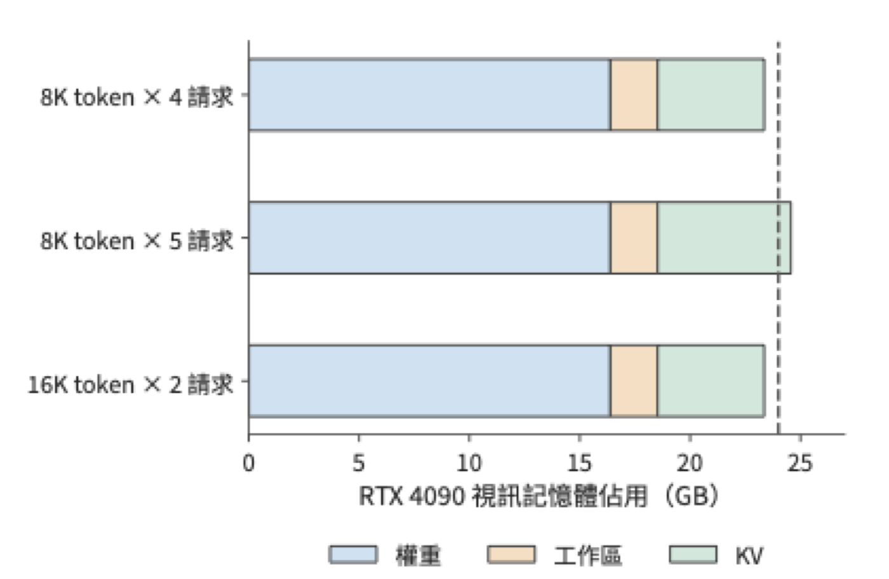
圖 4-13 RTX 4090 的 24 GB 視訊記憶體中的權重、工作區和 KV。8K 四請求與 16K 兩請求可以容納，8K 五請求超過虛線標出的容量上限。
圖 4-13 中，權重與工作區的寬度保持不變，變化發生在右側的 KV 區域。長上下文讓每個 KV 塊變寬，增加併發則增加塊數；二者爭用同一份剩餘空間。
最大請求數的取整公式揭示了容量的階梯效應。增加少量記憶體時，\(B_{\max}\) 可能保持不變；只有剩餘空間足以容納一條新請求的全部 KV，才能多接收一條請求。壓縮權重會增大公式分子中的剩餘空間，因此也能容納更多請求。對權重較大的模型，減少固定佔用可明顯提高併發；對長上下文任務，KV 已佔較大比例，繼續壓縮權重的收益會逐漸減小。
降低 KV 位寬也能釋放容量。第 2 章的 DeepSeek V4.1-Flash 同時使用全域歷史與 SWA 區域性視窗。一條主 KV 記錄的 512 個值採用 FP4，連同分組 scale 共佔 288 bytes；區域性視窗的一條記錄採用 FP8，連同 scale 共佔 528 bytes。主 KV 在參與注意力乘法前反量化，即利用 scale 恢復為計算所用的數值格式。儲存格式壓縮了常駐狀態，執行時再恢復運算元。38
以上只計了推理時的狀態。訓練還使用梯度、最佳化器狀態和為反向傳播儲存的活化值。按照第 3 章介紹的張量生命週期計算這些狀態的佔用：在某一時刻仍需儲存的所有張量共同決定記憶體佔用峰值，已經釋放的中間結果騰出空間給後續工作。容量規劃因而既與每份張量大小有關，也與執行順序有關。
視訊記憶體容量最終由記憶體元件與介面提供。HBM 透過堆疊儲存 die 和寬介面提供頻寬；圖形雙倍資料速率記憶體（GDDR）通常以多顆儲存晶片配合高速介面提供視訊記憶體。兩者都是記憶體元件與介面技術，而統一記憶體是處理器共享記憶體的組織方式。Apple 的 CPU 與 GPU 存取共享實體記憶體，兩者可以先後使用同一個緩衝區，減少獨立副本；相應地，CPU、GPU 與其他應用也共同消耗這份容量與頻寬。8 第 4.5 節會沿主機到加速器的路徑分析這種組織對傳輸時間的影響。
思考：KV 壓縮後能否再接納一條請求？ 若每條請求 KV 需求從 1.21 GB 降低 10%，RTX 4090 能否容納第五條請求？先求五條請求的總需求，再比較剩餘空間。
4.3.2 快取、片上緩衝與暫存器¶
算一塊輸出時，輸入中的同一個數往往還要參與鄰近輸出的計算，尚未算完的部分和也要繼續累加。如果每做一次乘加都回到片外取數、寫回結果，就會產生大量往返。把常用資料留在計算單元附近，如同把當前要用的材料放在手邊的工作臺上，可以減少這些搬移；但近處的空間有限。
暫存器儲存執行緒與指令正在使用的值，快取自動保留最近存取的資料，軟體管理的緩衝則由程式明確安排載入和釋放。三者都能儲存反覆使用的資料，但容量、存取方式與管理者各不相同。片上儲存還要佔用晶片面積，容量通常比片外記憶體小得多。下面跟蹤兩塊輸入和一塊部分和，計算所需空間。
考慮 \(m=n=128,k=64\) 的乘加塊。BF16 輸入與權重塊各為 16 KiB，合計 32 KiB；FP32 輸出累加器為 \(128\times128\times4=64\) KiB。V100 每個 SM 最多可把 96 KB（即 96 KiB）設定為共享記憶體，若運算元與累加器都放在其中，恰好用滿。40 要同時準備下一對運算元，便需要 \(2\times32+64=128\) KiB。
若累加器使用獨立儲存，同樣的 96 KiB 就能容納三組配對的輸入塊與權重塊。區域性緩衝的總容量沒有增大，但儲存分工改變了可以提前準備的輸入塊數。第 4.6.1 節將用 Blackwell 的專用累加儲存說明這種分工。
前例把計算塊的部分和留在片上，省去了反覆寫回。同樣的思路也適用於多個計算塊共同使用的輸入。設四個輸出塊都要讀取同一份 32 KiB 輸入，它們共發出 128 KiB 的邏輯請求。L2 是計算單元之間共享的二級快取。若第一次讀取把資料留在 L2，後面三次命中，則片外只需提供 32 KiB，但 L2 仍要向各塊提供全部 128 KiB。若四個輸出塊由同一計算組順序處理，並將輸入留在區域性緩衝，後續存取就可以直接從區域性緩衝取得資料。
因此，分析同一份資料時，需要區分三個量：資料本身佔用的空間、各計算塊請求讀取的位元組數、某一級介面實際傳輸的位元組數。算術強度也隨觀察層次變化。用 L2 請求量計算的強度要與 L2 頻寬一起使用，用 DRAM 流量計算的強度則與片外頻寬一起使用。第 4.8 節將用實際計數展示這種差別。
L2 的另一項作用由其位置決定。GPU 的 SM 按圖形處理簇（Graphics Processing Cluster，GPC）分組；L2 則分為多個分片，各自負責一段地址，並透過片上交叉互連（crossbar）與全部 SM 相連。RTX PRO 6000 有 188 個 SM，L2 共 128 MiB。暫存器、共享記憶體和一級快取均為各 SM 私有。自 Hopper 起，同一 GPC 內的若干 SM 可組成執行緒塊簇（thread block cluster），簇內 SM 可直接讀寫彼此的共享記憶體，即分散式共享記憶體。除此之外，SM 之間沒有共享的儲存：一個 SM 的結果要交給另一個 SM，只能先寫入 L2 分片，再由對方讀回（圖 4-14）。因此，L2 既是片外資料進入晶片的入口，也是簇以外 SM 交換資料的唯一途徑。
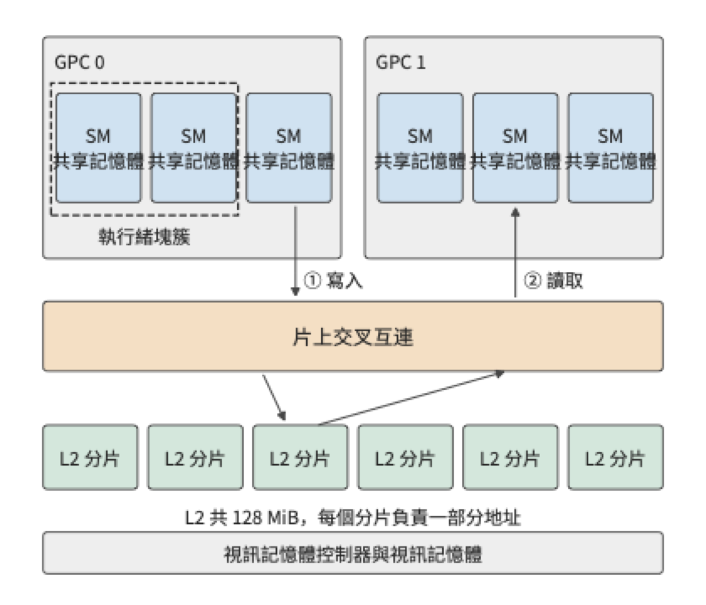
圖 4-14 GPU 片上儲存與資料通路。虛線框內的 SM 組成執行緒塊簇，可直接存取彼此的共享記憶體；其餘 SM 之間的資料經交叉互連寫入 L2 分片（①），再由讀取方取回（②）。圖中 SM、GPC 與分片的數量僅為示意。
增大計算塊通常能增加資料複用，但也需要更大的緩衝。RTX 5090 與 RTX PRO 6000 採用 SM120 架構，每個 SM 的一級資料快取與共享記憶體合計 128 KB，其中最多 100 KB 可設定為共享記憶體，由駐留在該 SM 上的計算組共用：每個計算組需要 32 KiB 時，可以駐留三組；每組擴到 64 KiB 後，只能駐留一組。41 一組等待資料時，另一組可以繼續計算。因此，同時執行的組數減少後，計算單元更容易閒置。選擇塊大小時，要同時考慮每組能減少多少重複讀取，以及還能容納多少組相互獨立的計算。
片上緩衝容量也隨代際增加。A100 每個 SM 的共享記憶體容量上限為 164 KB，H100 為 228 KB。14 更多計算組駐留在片上，也能發出更多相互獨立的讀取請求。
4.3.3 容量、頻寬與延遲分別限制什麼¶
容量是某一時刻能夠容納多少資料，頻寬是單位時間傳輸多少資料，延遲是一次請求從發出到完成經過多久。同時發出足夠多的獨立請求，則可以在等待一次存取回傳時繼續處理其他存取。
模型駐留和逐步執行對記憶體提出的要求不同。按第 4.1.3 節的 HBM 設定表，H100 SXM 為 80 GB、3.35 TB/s，H200 SXM 為 141 GB、4.8 TB/s，容量與頻寬的增幅並不相同。Qwen3-235B-A22B 的一組 4-bit 方案中，權重與 scale 約為 123.1 GB，八條請求各保留 8,192 個 token 的 KV 約為 12.6 GB，加 2 GiB 工作區，共約 137.9 GB。H100 的容量缺口接近 58 GB，H200 則有約 3.1 GB 餘量。容量增加，首先是讓這些資料能夠同時駐留。15
全部專家的權重都儲存在記憶體中，而每步需要讀取哪些權重由路由結果決定。八條請求的專家選擇分散時，權重、scale 與 KV 的每步存取約為 75.967 GB；集中選擇相同專家時，降至約 24.737 GB。在 H200 上，僅傳輸這些位元組分別需要約 15.8 ms 和 5.2 ms；改用 8 TB/s 的 HGX B200，分別為約 9.5 ms 和 3.1 ms。專家複用把流量減少到約三分之一，加速器升級則把傳輸一個位元組所需的時間減少到原來的約六成，兩種改動作用在公式 \(T=V/R\) 的不同位置。
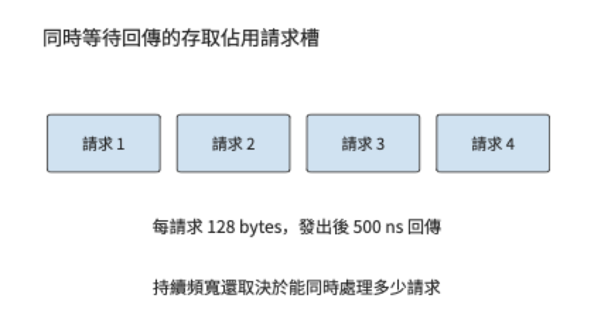
圖 4-15 讀取請求從發出到回傳一直佔用請求記錄空間。多個獨立請求交疊，才能在單次存取等待期間持續利用介面；圖中只畫四個代表請求。
上述 \(V/R\) 計算假定介面可以持續達到給定頻寬。要維持這種速度，就必須在一次存取等待回傳時繼續發出其他請求。將記憶體介面一次傳輸的基本單位稱為訪存事務。設介面中最多同時有 \(N_o\) 個在途事務，每個事務帶回 \(s\) bytes，平均完成延遲為 \(L\)。一個事務從發出到回傳期間佔用一個位置；每秒最多完成約 \(N_o/L\) 個事務，於是
把式子按 \(N_o\) 求解，維持目標吞吐需要
這就是 Little 定律：平均在途請求數等於請求完成速率乘以平均請求延遲。硬體佇列決定能容納多少在途事務，而程式中相互獨立的存取決定能否用滿佇列。若下一地址依賴上一讀取結果，佇列即使很深也無法填滿；多個獨立計算塊則能提供互不等待的讀取。
依賴鏈上的每次存取都要承受完整的延遲，L2 命中延遲也正是這樣測得的：單個執行緒反覆讀取，每次的地址取自上一次讀到的值，資料全部駐留在 L2。RTX PRO 6000 上，一次 L2 往返約 340–390 個時鐘週期，按實測 2.88 GHz 的 SM 頻率約為 120–135 ns，雖短於視訊記憶體存取，仍相當於數百個週期的停頓。該延遲還與資料所在的分片有關，同一程式在不同行程中測得 354–870 個週期。SM 之間的每次交接都由若干次這樣的往返構成，見第 4.4.4 節。35
例 4-2：換上頻寬更高的顯示卡，KV 讀取也會同比加快嗎？
比較在途事務數與介面頻寬對 KV 讀取的限制。 讀取一條請求的 8,192 個上下文 token 所對應的 KV，共 1.125 GiB。視訊記憶體介面取 RTX 4090 的 1,008 GB/s，每事務 128 bytes，完成延遲取 500 ns：記憶體效能測量工具 Mess 在 H100 上測得的視訊記憶體空載延遲為 363 ns，接近飽和頻寬時升到 699—1,433 ns，500 ns 位於二者之間。16 分別計算最多允許 128 和 4,096 個在途事務時的有效讀取頻寬與耗時，再比較換成 RTX 5090 的 1,792 GB/s 後的結果。
由在途位元組數和存取延遲求有效讀取頻寬。 維持 1,008 GB/s 需要 \(\lceil1.008\times10^{12}\times500\times10^{-9}/128\rceil=3938\) 個事務。128 個事務只能提供約 32.8 GB/s，讀取時間至少為 36.9 ms；4,096 個事務足以維持 1,008 GB/s，時間降為約 1.20 ms。
在途事務不足時，更高的介面頻寬收益有限。 換成 RTX 5090 後，4,096 個事務仍只能支援約 \(4096\times128/(500\ \mathrm{ns})=1.05\) TB/s，時間約為 1.15 ms。介面頻寬提高了約 78%，吞吐率卻受在途事務數限制，只提高約 4%。
用滿更高頻寬或應對更長延遲，需要多少在途事務？ 把在途事務數提高到至少 7,000 個，才能維持 1,792 GB/s；若延遲增至 800 ns，該要求又增至 11,200 個。31
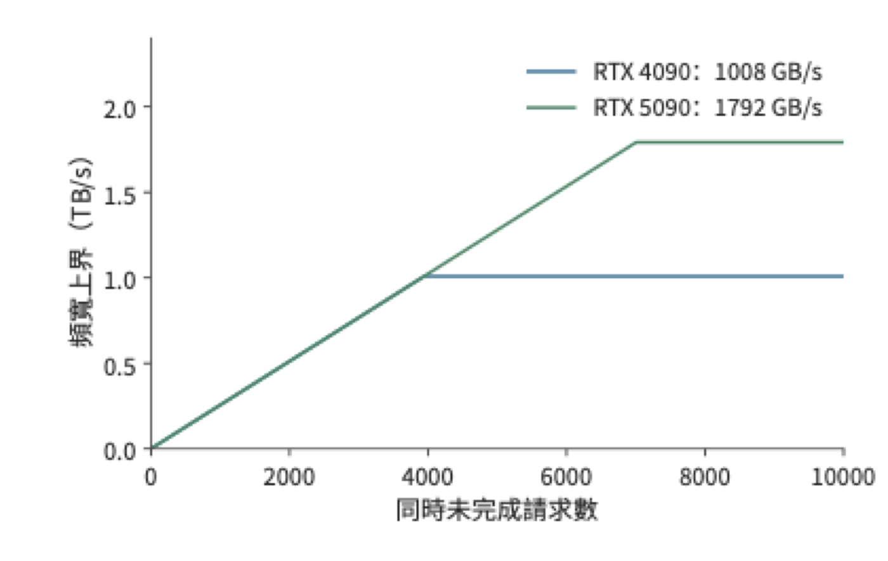
圖 4-16 每事務 128 bytes、回傳延遲 500 ns 時，增加在途請求數會提高頻寬上界，直到碰到 RTX 4090 或 RTX 5090 視訊記憶體介面本身的速率上限。
圖 4-16 的兩條曲線在併發較小時重合，是因為限制來自在途位元組數。越過各自拐點以後，介面頻寬成為新的瓶頸。實際系統中，增加併發存取還會使佇列變長，延遲也隨負載變化；Mess 用延遲探針與可調背景流量同時觀察這兩項，得到頻寬—延遲曲線。16 這條曲線把「同時發起獨立請求可以減少等待期間的空閒」與「請求過多會增加排隊時間」放進同一張圖中。
分析儲存效能時，先根據容量判斷資料能否駐留，再根據複用情況計算各級介面的流量，最後結合併發量和延遲判斷介面能否持續傳輸。
實驗 4-3 · 延伸：記憶體擴容與頻寬提升分別能改善哪些 decode 瓶頸
使用 Qwen3-8B 與 Qwen3-235B-A22B 的儲存結果，分別只增加容量、只增加頻寬，再改變 batch 和專家分佈。先求最大可駐留請求數，再計算每步讀取時間，最後求維持目標頻寬需要的在途事務數。說明每種方案首先受容量、傳輸時間還是訪存併發數限制。
4.4 資料搬移¶
第 4.1—4.3 節算出了資料的大小與複用次數，也解釋了維持頻寬所需的併發。本節進一步安排這些資料何時取得、何時使用、何時釋放。資料搬移的核心，是讓下一塊在計算單元使用它之前到達，同時保留當前塊直到最後一次使用結束。
4.4.1 資料佈局與定址¶
在矩陣上畫出一個小方塊，只確定了要取哪些元素。這些元素在記憶體裡未必相鄰：若原矩陣按行存放，小方塊的一行讀完後，還要越過未選中的元素，到原矩陣下一行的對應位置繼續讀取。數學上的分塊可以只改變索引與存取範圍，不必先複製出一份獨立的小矩陣。硬體需要根據步長找到這些元素。一個元素佔 \(b\) bytes、行步長為 \(s_r\) bytes、列步長為 \(s_c\) bytes 的二維檢視，元素地址為
矩陣按行連續儲存時 \(s_c=b\)，行步長由完整行寬決定。取子矩陣時，子矩陣每行只佔原矩陣一行的一部分，但相鄰行起點之間的距離仍等於原矩陣的行步長。這決定了硬體要發起何種存取。
例如，從 BF16、行寬 4,096 的矩陣中取 128 行、每行連續 128 個元素。有效資料為 \(128\times128\times2=32\) KiB，每行只有 256 bytes，而相鄰行起點相差 8,192 bytes。第一行起點到最後一行終點跨越 \(127\times8192+256=1\,040\,640\) bytes。逐行讀取只傳輸各行的有效區間；如果相鄰執行緒存取相鄰元素，它們的請求還可以合併成較少的事務。
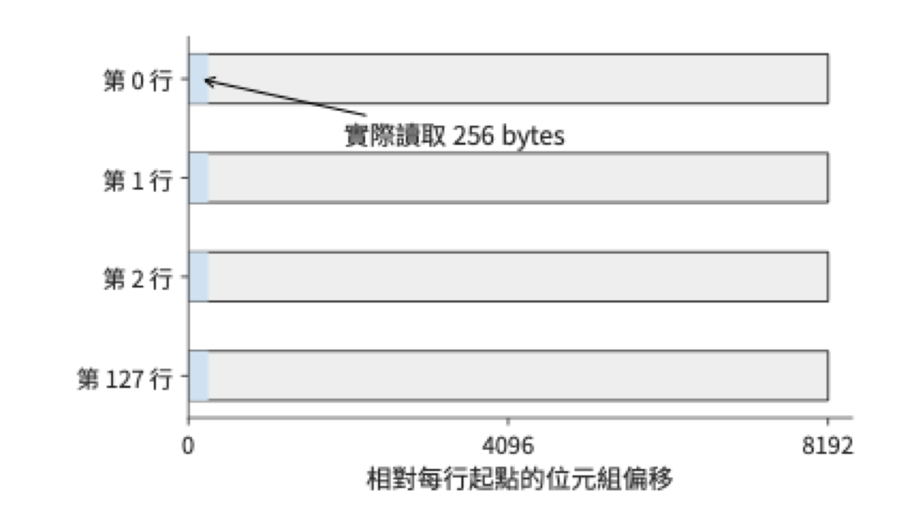
圖 4-17 每行前 256 bytes 是實際讀取區間，相鄰行起點相差 8192 bytes。128 行合計讀取 32 KiB，行間灰色區域由步長跳過。
藍色區域每行只有 256 bytes，下一行的藍色區域卻要到 8,192 bytes 之後才開始。讀取整個地址跨度會把灰色空隙也搬走，逐行讀取則只取得藍色部分。由此可見行步長的作用：它告訴搬移單元下一段有效資料從哪裡開始。
資料佈局從兩方面影響存取開銷：步長影響地址計算，地址的連續性影響多個存取能否合並為一次事務。相同的 32 KiB，有的排列能夠用規則連續請求取得，有的排列要發出大量短請求。第 4.3 節中的每事務位元組數 \(s\)，就取決於這些存取如何合併。
分塊又決定同一地址會被請求多少次。DeepSeek V4-Flash 共享專家的一次 w1 計算為 \([32,4096]\times[4096,2048]\)，FP8 輸入只有 128 KiB。輸出寬度分成 16 個、各 128 列的塊，每個輸出塊都要遍歷完整輸入，所以塊級輸入請求合計為 \(16\times128\) KiB，即 2 MiB。權重按輸出列劃分，各塊讀取自己的部分，權重資料合計為 8 MiB。17
輸入大小仍是 128 KiB，多出的請求來自輸出列方向的分塊。若這些輸出塊共享快取，重複請求可以直接從片上快取取得資料；若同一個計算組保留輸入並連續計算多個輸出塊，複用又可以移到區域性緩衝。定址、分塊與儲存層次在這裡連線起來：分塊方式決定發出哪些讀取請求，資料所在的位置決定這些請求經過哪一級介面。
普通載入指令可以逐步計算地址併發起存取；專門的搬移單元則接收張量形狀、步長和起點，重複生成這些地址。這組描述搬移任務的參數稱為描述符。NVIDIA Hopper 架構（H100 所屬架構）的張量記憶體加速器（TMA）和昇騰 950 的多維直接記憶體存取單元（NDDMA）都提供多維張量搬移能力。18 對上述子矩陣，起點、128 行、每行 256 bytes、行步長 8,192 bytes 足以描述整次規則搬移。由專門單元負責這些重複的地址計算後，計算執行緒就可以繼續處理其他工作。
4.4.2 非同步搬移與雙緩衝¶
找到並取出一塊資料之後，還要讓下一塊及時到達：若總等當前塊算完才開始讀取，計算單元就會反覆停頓。準備兩個緩衝後，可以一邊使用第一個緩衝中的資料，一邊把下一塊載入到第二個緩衝；當前塊用完，兩塊緩衝交換角色。這就是雙緩衝：以額外空間換取載入與計算在時間上的重疊。
設共有 \(n\) 塊資料，每塊載入耗時 \(t_l\)、計算耗時 \(t_c\)。若取得一塊、算完一塊，再開始下一塊，總時間為 \(n(t_l+t_c)\)。載入與計算使用獨立資源時，採用雙緩衝，第一塊先載入、再計算，後續各塊以較慢階段的節奏完成：
八塊資料每塊載入 2 μs、計算 1 μs，依序執行時需 24 μs，流水需 \(2+1+7\times2=17\) μs。節省的 7 μs 來自重疊，傳輸位元組和乘加次數都保持不變。再把計算加快一倍，總時間僅降到 16.5 μs，因為載入仍然每兩微秒才能提供一塊。
上述分析把載入看作一個完整階段。下面將載入拆成傳輸與等待回傳，計算多個請求同時進行時需要多少緩衝。這裡用 tick 表示 B200 一個 SM 的時鐘週期，並區分發起間隔與完成延遲：若每隔 64 tick 發出一次讀取請求，而每塊資料要在請求發出 192 tick 後才可使用，就會有多塊同時等待回傳。計算開始前，輸入必須已經到達。把儲存一個輸入塊的緩衝區稱為一個輸入槽：從發出讀取請求，到該塊計算結束，該槽一直被佔用。增加槽位可以更早發起後續資料的讀取，但也佔用更多區域性儲存。
用注意力的 QK 計算具體推導。兩個輸入都是 \(128\times128\)，沿頭維度切成四個 \(k=32\) 的累加塊。每塊 Q/K 輸入合計 16 KiB，計算量為 1,048,576 FLOPs，四次計算依次更新同一份 FP32 結果，結果儲存在獨立的 64 KiB 累加儲存中。矩陣速率取 FlashAttention-4 論文給出的 B200 每個 SM 每週期 8,192 FLOPs；輸入傳輸速率取 256 bytes/tick，傳輸結束後再等 128 tick 資料才可用。199
於是每塊輸入傳輸耗時 64 tick，發起後 192 tick 就緒，計算再用 128 tick。
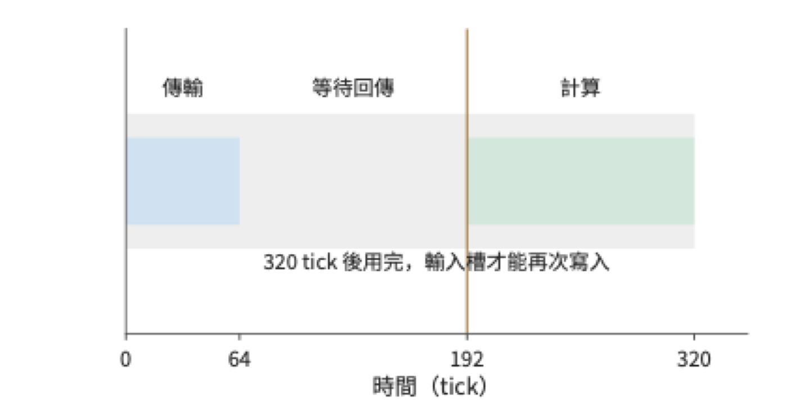
圖 4-18 一個輸入槽從發起到釋放的完整生命週期。傳輸 64 tick，額外等待 128 tick，資料在 192 tick 就緒，再計算 128 tick，於 320 tick 釋放。一個 tick 為 B200 SM 的一個時鐘週期。
只有一個輸入槽時，該槽經歷載入、等待、計算，共 \(64+128+128=320\) tick 後才能複用，四塊在 1280 tick 結束。
圖 4-19 至圖 4-21 依次畫出一槽、兩槽和三槽的執行，並保持時間尺度一致。先沿綠色計算區間尋找空閒，再向上檢視下一塊輸入何時就緒，就能判斷等待從何而來。
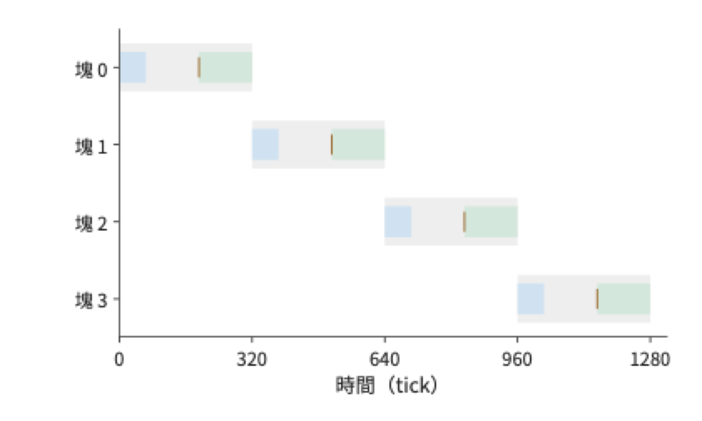
圖 4-19 一個輸入槽的四塊時序。藍條為傳輸，橙線為就緒，綠條為計算，淺灰為槽佔用；上一塊用完後才能再次發起，完成時刻為 1280 tick。一個 tick 為 B200 SM 的一個時鐘週期。
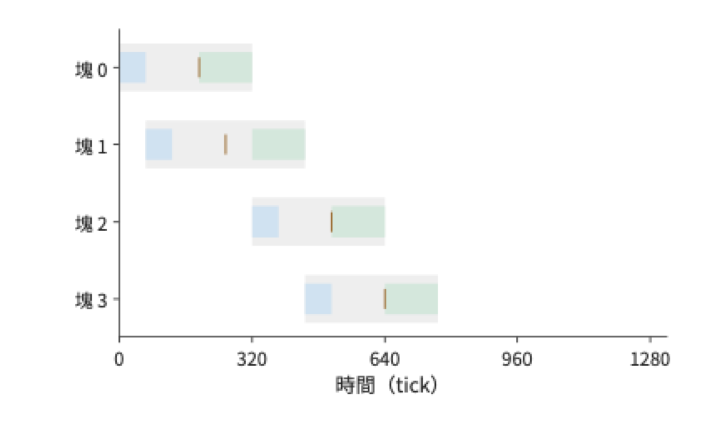
圖 4-20 兩個輸入槽使用相同時間尺度。前兩塊可提前發起，但第三塊到 512 tick 才就緒，第二塊在 448 tick 已結束，留下 64 tick 空閒。橫軸一個 tick 為 B200 SM 的一個時鐘週期；各行對應一個資料塊，灰色表示輸入槽佔用，藍色表示傳輸，綠色表示計算，豎標記表示資料就緒。
兩個槽允許在時刻 0 和 64 發出前兩塊的讀取請求。第一塊在 192 開始計算、320 結束，釋放的槽用於第三塊，第三塊在 512 就緒；第二塊在 448 已算完，因此中間留下 64 tick 空閒。繼續按同樣次序，第四塊在 768 結束。第二個槽讓一部分資料載入與計算重疊，但矩陣單元仍會在兩塊計算之間空閒。
要連續計算四塊，最早完成時間是首塊等待加四次計算，即
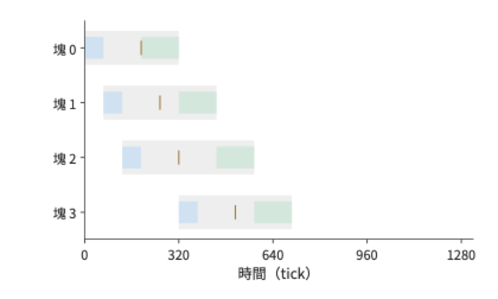
圖 4-21 三個輸入槽提前發起前三塊，第一槽釋放後接收第四塊。矩陣單元從 192 連續計算到 704 tick，第四槽不再縮短完成時間。橫軸一個 tick 為 B200 SM 的一個時鐘週期；各行對應一個資料塊，灰色表示輸入槽佔用，藍色表示傳輸，綠色表示計算，豎標記表示資料就緒。
三個槽已足以實作這一時間。前三塊的讀取請求分別在時刻 0、64、128 發出，分別在 192、256、320 就緒；計算從 192 開始依次進行。第一塊在 320 釋放槽位，立即發出第四塊的讀取請求，第四塊在 512 就緒，早於計劃開始計算的時刻 576。矩陣單元因此從 192 到 704 tick 一直連續計算，中途沒有空閒。34
| 輸入槽數 | 輸入緩衝 | 完成時間 | 相對前一項節省 |
|---|---|---|---|
| 1 | 16 KiB | 1280 tick | — |
| 2 | 32 KiB | 768 tick | 512 tick |
| 3 | 48 KiB | 704 tick | 64 tick |
| 4 | 64 KiB | 704 tick | 0 |
這一例子給出了一種尋找緩衝設定的方法：先用首塊到達時間與連續計算時間求出目標，再逐個檢查每塊能否按時到達，最後尋找滿足目標的最少槽位。第四個槽雖然讓最後一塊更早就緒，卻沒有讓計算更早開始；提前取得的資料只是多等待了一段時間。
緩衝設定還隨計算速度變化。矩陣速率翻倍後，每塊計算只需 64 tick，連續計算的目標變為 \(192+4\times64=448\) tick。只有三個槽時，第四塊最早在 256 tick 發出讀取請求，到 448 tick 才可使用，來不及在原計劃的 384 tick 開始計算，完成時間為 512 tick；四個槽則能提前發出全部請求，達到 448 tick。矩陣計算加快以後，原來的載入安排已經來不及準備下一塊資料，輸入緩衝也需要重新設定。
有了非同步搬移，計算執行緒發起載入後可以繼續做其他工作，到要用資料時再等待完成事件。搬移單元向空槽寫入資料，完成事件標記資料就緒；計算結束後再釋放槽位。NVIDIA 的非同步複製、昇騰 MTE／NDDMA 與 Metal 的任務依賴機制都用於安排這類交接。18
思考：輸入可用前的額外等待翻倍，三個緩衝槽是否夠用？ 保持原來的傳輸和計算速率，將資料傳輸結束到輸入可用的額外等待時間從 128 增至 256 tick。三個槽能否繼續實作無間隙計算？分別寫出第四塊的就緒時刻與所需時刻。
4.4.3 單元間的資料傳遞¶
輸入流水減少了矩陣單元等待資料的時間，但注意力還要把矩陣結果交給向量單元，再將機率送回矩陣單元。若完整儲存一個 \(128\times128\) FP32 分數矩陣，需要 64 KiB；矩陣單元寫一次、向量單元讀一次，經過同一儲存介面的資料共 128 KiB。若矩陣單元直接把結果傳給向量單元，就可以省去這次中間結果寫回和重新讀取。
向量計算何時開始，還取決於它需要哪些完整結果。普通逐行 Softmax 要先得到一行的全部分數，再求最大值和歸一化分母。沿 QK 的內積維度計算一半時，每個分數都只是部分和；按查詢行分組則可以先完成一組完整行，把它們交給 Softmax，其餘行繼續矩陣計算。分組方向因此決定向量單元能否提前開始計算。
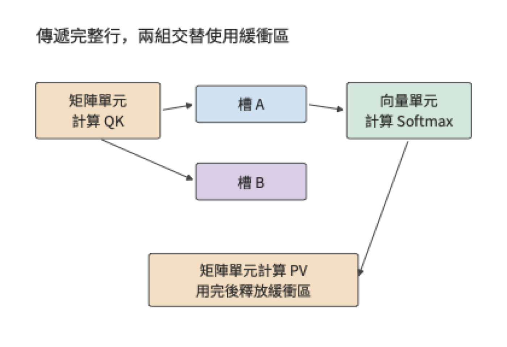
圖 4-22 矩陣與向量單元透過完整行組交接。QK 產生分數，Softmax 產生機率，PV 使用機率後釋放槽；另一槽容納相鄰行組，使不同組可以重疊推進。
將 128 行沿查詢方向分成四組、每組 32 行，一組 FP32 分數和 BF16 機率共需 \(32\times128\times(4+2)=24\) KiB。下面比較使用一個和兩個緩衝區儲存交接資料的方案；每個緩衝區從該組 QK 開始佔用，到 PV 完成才釋放。QK 與 PV 共用矩陣單元，Softmax 使用向量單元，兩個方向共用交接介面。使用兩個緩衝區時，不同組可以同時執行不同階段的計算。20
本算例在矩形分數塊上執行 QK、Softmax 與 PV，按完整行組順序排程已就緒工作。tick 仍為 B200 SM 的時鐘週期，矩陣速率 8,192 FLOPs/tick、交接介面 128 bytes/tick、指數與除法每 tick 16 次，分別取 FlashAttention-4 論文給出的每 SM 矩陣速率、共享記憶體讀取頻寬和特殊函式單元速率9；向量單元依序執行縮放、減法與求和、比較、指數和除法，普通運算及比較取每 tick 128 次。32 行一組時，QK 與 PV 各用 128 tick；Softmax 的普通運算、比較、指數、除法分別用 96、32、256、256 tick，合計 640 tick。直接交接 16 KiB 分數和 8 KiB 機率分別用 128、64 tick，先寫後讀的路徑則分別用 256、128 tick。各步驟按整數 tick 向上取整。
| 交接方式 | 行組大小 | 槽數 | 向量計算開始時刻 | 完成時間 |
|---|---|---|---|---|
| 寫入儲存後再讀取 | 128 | 1 | 1536 tick | 5118 tick |
| 寫入儲存後再讀取 | 32 | 1 | 384 tick | 5120 tick |
| 寫入儲存後再讀取 | 32 | 2 | 384 tick | 3200 tick |
| 直接傳遞 | 32 | 2 | 256 tick | 3008 tick |
| 直接傳遞 | 32 | 4 | 256 tick | 3008 tick |
先只改分組。向量單元從 1536 提前到 384 tick 開始計算，但總時間仍約為 5120 tick。原因在於只有一個槽：這一組進入 Softmax 時，槽內結果仍要保留，下一組 QK 無處寫入，只能等待前組 PV 結束。提前開始縮短了第一組的等待，卻沒有讓相鄰組重疊。
再增加第二個槽，下一組可以使用另一槽推進，總時間降到 3200 tick，減少約 38%。隨後改為直接交接，減少每次交接經過儲存介面的位元組數，總時間進一步降至 3008 tick，節省約 6%。繼續增加槽位沒有改變耗時最長單元的工作節奏，完成時間保持不變。
分組提前產生完整結果，第二個槽使相鄰組重疊，直接通路縮短交接時間。這三項改動分別改變依賴、可同時推進的組數和介面工作量；第 4.6.2 節將這三項改動對應到昇騰的架構演進。
實驗 4-4 · 核心：維持連續計算需要多少片上緩衝
分別畫出輸入流水使用一至四個緩衝槽時的時間線，根據資料到達、計算結束和緩衝區釋放的時刻，確定維持連續計算所需的最少槽數；再將矩陣速率翻倍，解釋最少槽數的變化。隨後畫出各查詢行組經過 QK、Softmax 和 PV 的時間線，區分分組、增加槽位和直接傳遞各自省下的時間。最後在固定片上容量下，分析每組緩衝的大小如何限制能夠同時駐留的組數。
4.4.4 SM 之間的交接：fence 與同步層級¶
第 4.4.3 節的交接發生在 SM 內部。decode 時 batch 很小，矩陣—向量乘必須分給全部 SM 才能用滿視訊記憶體頻寬，每個 SM 只算出輸出向量的一段，而下一個運算子（如 RMSNorm）需要完整的向量。此時交接跨越 SM，只能經由 L2。
跨 SM 交接分兩步：生產者先寫資料、再寫標誌；消費者反覆讀取標誌，即輪詢，讀到新值後再讀資料。關鍵在於順序。資料與標誌可能位於不同的 L2 分片，兩次寫入分別經過交叉互連，先發出的未必先到達；消費者若先看到標誌，就可能讀到尚未更新的資料。因此，生產者寫標誌前須執行 fence，即保證訪存順序的指令，等待 L2 確認此前的寫入均已完成；消費者看到標誌後，後續讀取也不得提前執行。這兩條約束分別稱為釋放（release）語義與獲取（acquire）語義，過程如圖 4-23 所示。
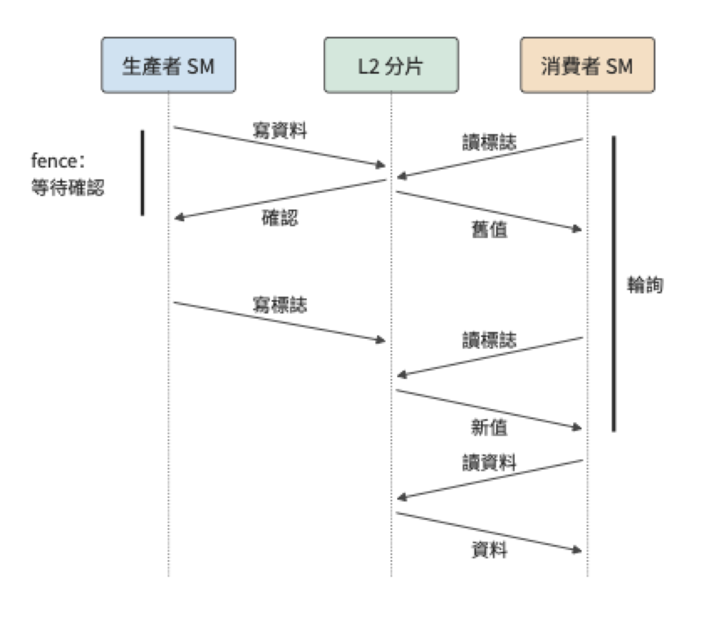
圖 4-23 跨 SM 交接的時序，時間自上而下。fence 使生產者等到 L2 確認資料寫入後才寫標誌；消費者輪詢到新值後再讀資料。每條斜線穿過一次交叉互連，約為半次 L2 往返。
RTX PRO 6000 上，一次一對一交接約 370 ns（約 1,050 個週期），其中 fence 約佔 600 個週期。去掉 fence 只需約 140 ns，接近一次 L2 往返，但無法保證結果正確。由硬體發出的訊號同樣受此約束：CUDA 的 PDL（Programmatic Dependent Launch，前一個 kernel 發出訊號後即可啟動後一個 kernel）實測每個邊界約 366 ns，與軟體交接相當。
全部 SM 匯合的代價更高。各 SM 完成後對同一計數器加一，計數達到 188 時，輪詢中的 SM 開始下一步。188 次加一在同一地址排隊，合計不到 80 ns；主要開銷來自兩側的 fence（各約 460 個週期）、到達與輪詢的往返，以及各 SM 完成時刻的差異，共約 1,900 個週期，即約 660 ns。若還要把完整的活化向量送到每個 SM，188 個 SM 會同時讀取同一組快取行（快取以固定大小的行為單位管理，此處每行 128 bytes），請求集中在少數分片上排隊：全部 SM 同時讀取同一行時，每次讀取約 3,400 個週期，是各讀一行時的 9 倍。將向量複製 8 份、分散到不同分片後，連同資料的一次全 SM 交接約為 1.0 μs。
圖 4-24 彙總了各級同步的代價。依賴跨越的範圍越大，經過的儲存越遠，代價越高：SM 內的柵欄（barrier，參與的執行緒全部到達後才一起放行）由 SM 硬體計數，約 7 ns；執行緒塊簇內經 SM 間網路同步，約 130 ns；超出簇的範圍就要經由 L2，一對一交接約 370 ns，全部 SM 匯合並送達資料約 1 μs。
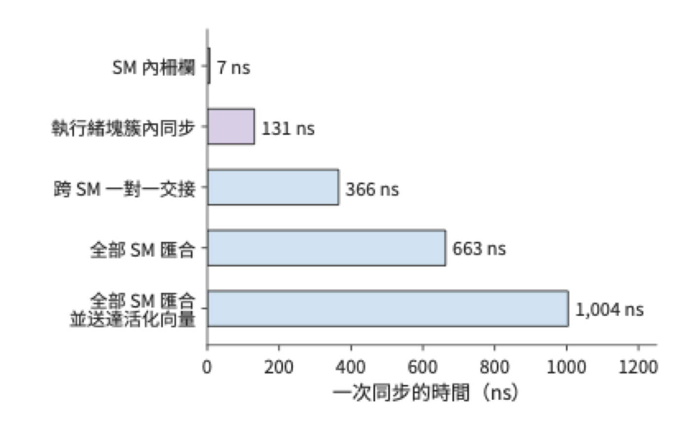
圖 4-24 RTX PRO 6000 上各級同步一次所需的時間。綠、紫、藍三色分別對應 SM 內、執行緒塊簇內與經由 L2 的同步；一對一交接採用釋放—獲取實作，全部 SM 匯合送達的是複製為 8 份的 8 KiB 向量。數值為共用 GPU 期間多次測量的最小值。
執行緒塊簇不能取代 L2。簇與簇之間仍經由 L2；簇內分散式共享記憶體的讀取頻寬也較低，每個 SM 每週期約 1.3 bytes，而 L2 約 6.9 bytes，本 SM 的共享記憶體約 36 bytes。在簇內交換 16 KiB 的活化向量，比經由 L2 慢十倍以上。
上述代價與 kernel 的提交方式無關。第 5.5 節的圖重放與 persistent kernel 能消除主機提交和 kernel 啟動的開銷，卻不能消除依賴本身所需的 L2 往返：只要下一個運算子需要全部 SM 的結果，每個這樣的邊界仍需約 1 μs。第 4.1.2 節所說的第二類等待，即等待前一項計算完成，跨越 SM 時就表現為這些 L2 往返。35
4.5 多晶片封裝與互聯¶
單個加速器無法滿足計算或儲存需求時，可以把計算和儲存分佈到更多晶片。擴充增加了資源，也增加了生成資料與使用資料的單元之間的距離。本節沿封裝內、主機與加速器、加速器之間三種連線，分析資料放置和傳輸粒度如何影響完成時間。
4.5.1 封裝內的計算晶片、記憶體與連線¶
封裝可以包含多顆 die，由這些 die 共同提供計算單元和記憶體介面。Blackwell 資料中心產品與昇騰 910C 都採用雙 die 設計：各 die 提供本地計算能力和儲存介面，封裝內的鏈路負責跨 die 的資料交換。21 容量擴大後，更多模型能夠駐留；計算放在哪一側，則決定多少存取要經過鏈路。
下面用兩款雙 die 產品計算。HGX B200 每 GPU 有 180 GB HBM、8 TB/s 頻寬，八堆 HBM 平均分到兩顆 die 上，每顆 die 本地為 90 GB、4 TB/s，兩顆 die 之間的 NV-HBI 為 10 TB/s。昇騰 910C 每顆 die 本地為 64 GB、1.6 TB/s，die 間鏈路每方向 270 GB/s。兩顆 die 各存 32 GiB 權重，某階段要把這 64 GiB 全部讀一遍，計算都放在 die 0 上。die 0 從本地 HBM 讀取自己的 32 GiB，同時經鏈路讀取 die 1 上的 32 GiB。跨 die 的資料先從 die 1 的 HBM 讀出，再經過鏈路，速率取兩者中的較小者；本地與跨 die 兩路使用不同的介面，可以同時進行，所以這一階段的讀取時間由較慢的一路決定。
B200 的 NV-HBI 比每顆 die 的 HBM 還快：技術簡報沒有註明 10 TB/s 是否為雙向合計，即使按雙向合計、每方向 5 TB/s 計算，也高於每顆 die 的 4 TB/s。跨 die 讀取因而仍按 die 1 的 4 TB/s 進行，本地與跨 die 各需約 8.6 ms，整個階段約 8.6 ms，與兩顆 die 各讀本地權重相同：計算放在哪一側，不改變讀取時間。910C 的鏈路每方向只有本地 HBM 頻寬的約 17%，本地讀取約 21.5 ms，跨 die 讀取卻要約 127 ms，整個階段由鏈路決定。把處理 die 1 權重的計算移到 die 1，兩側各自讀取本地權重，只需約 21.5 ms；鏈路上傳遞的內容從 32 GiB 權重變成輸入與結果，若共 64 MiB，經 270 GB/s 鏈路約需 0.25 ms。21
兩款產品的差別由 die 間鏈路頻寬與每顆 die 本地 HBM 頻寬之比決定。B200 的這一比值為 2.5，跨 die 讀取與本地讀取一樣快，兩顆 die 可以作為一顆 GPU 使用；910C 的比值約為 0.17，跨 die 讀取耗時約為本地的 5.9 倍。由 384 顆昇騰 910C 組成的華為 CloudMatrix384 超節點在 DeepSeek-R1 的 decode 中也以 die 為單位部署專家，每顆 die 恰好放一個專家。比值小於 1 時，應讓計算單元在本地反覆使用大塊權重，只在 die 之間傳遞較小的輸入和結果。
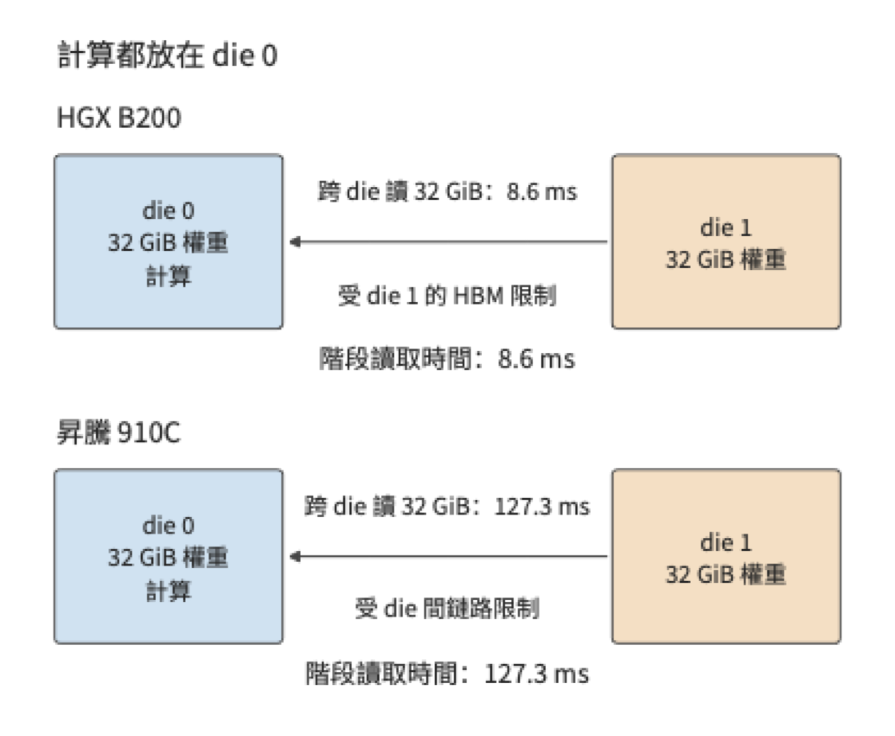
圖 4-25 計算都放在 die 0 時，要跨 die 讀取 die 1 上的 32 GiB 權重。B200 的跨 die 讀取受 die 1 的 HBM 限制，約 8.6 ms，與本地讀取相同；昇騰 910C 受 die 間鏈路限制，約 127 ms。
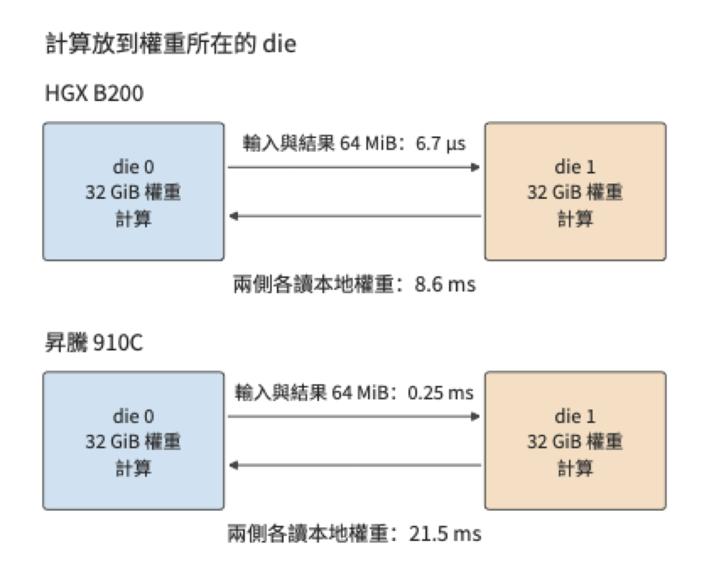
圖 4-26 計算放到權重所在的 die 後，鏈路上只交換 64 MiB 輸入與結果，兩側各讀本地權重。B200 仍約 8.6 ms；昇騰 910C 從約 127 ms 降到約 21.5 ms。
圖 4-25 與圖 4-26 比較計算單元與權重的相對位置：集中計算路徑搬移權重，就地計算路徑搬移輸入並取回結果。判斷如何分配計算任務時，先畫出每種方案經過鏈路的資料，再比較總量。
這種放置還創造了並行機會：兩側本地讀取和計算可以分別推進，最終再交接結果。是否需要等兩側都完成，由模型的計算圖決定；如果下一步要合併部分和，就在合併點形成同步。第 6 章會從具體的並行切分推導這些交接。
4.5.2 CPU 與加速器之間的資料存取¶
封裝內的資料放置決定跨 die 傳輸；晶片外也有類似問題。圖 4-2 展示了主機與加速器之間的資料交接：CPU 準備的資料需要傳給 GPU 使用。CPU 準備的輸入通常先放在主機記憶體裡，帶獨立視訊記憶體的 GPU 要經 PCIe 或平台專用連線取得這些資料。主機到裝置稱為 H2D，裝置到主機稱為 D2H。複製引擎透過直接記憶體存取（DMA）按準備好的地址搬移，CPU 提交複製命令後可以處理其他工作。
同一個張量先經主機鏈路上傳，再由 GPU 從視訊記憶體讀取，需要分別計算傳輸和讀取的時間。以 RTX 4090 為例：該卡經 PCIe 4.0 x16（16 條通道）連線主機，名義頻寬為雙向合計 64 GB/s，即每方向 32 GB/s；視訊記憶體頻寬為 1,008 GB/s。30 設輸入為 64 MiB，先忽略啟動開銷，則
上傳時間是一次視訊記憶體讀取時間的 31.5 倍，恰為兩條路徑的頻寬之比。如果只使用一次，主機傳輸佔主要時間；如果上傳後在加速器上覆用 \(R\) 次，每次分攤 \(T_{\mathrm{H2D}}/R\)。複用 100 次時，平均每次分擔的上傳時間降至約 21 μs。每次呼叫只需提交地址和執行參數，整份資料繼續留在視訊記憶體中。
還可以求出至少需要複用多少次：當 \(R\ge32\) 時，每次分攤的上傳時間已不大於一次加速器讀取。因此，提高主機鏈路頻寬對一次性輸入更有價值，保持權重常駐則可以省去重複上傳。
複製引擎與計算單元是獨立執行資源，可以在 GPU 計算當前 batch 時上傳下一個 batch。要形成流水，兩個輸入緩衝分別儲存當前 batch 和下一個 batch，當前 batch 計算結束後再交換緩衝區的用途；這正是第 4.4 節雙緩衝在主機鏈路上的應用。若複製寫入與計算讀取共同佔用記憶體介面，該介面要承擔兩部分流量。
並非所有平台都要經過這次複製。Apple 的 CPU 與 GPU 共享實體記憶體，採用雙方可存取的緩衝時，CPU 寫好資料並完成同步後，GPU 可以從同一儲存讀取。與獨立視訊記憶體的做法相比，省去的是單獨 H2D 副本及其傳輸；GPU 隨後的讀取仍由記憶體系統提供。8 統一記憶體把資料交接從「複製後使用」變成「同步後使用」。
統一地址空間讓 CPU 和 GPU 以同一組虛擬地址引用資料。CUDA 是 NVIDIA GPU 的程式設計與執行平台；其統一記憶體機制（Unified Memory）可按平台規則遷移頁面，地址相同而物理位置可以變化。29 資料與使用它的處理器之間的距離影響存取時間，地址和同步機制則讓處理器能夠找到資料，並在寫入完成後讀取。
4.5.3 加速器之間的資料交換¶
主機上傳的例子強調了資料駐留和複用。卡之間還會頻繁交換活化值、專家輸入或部分結果，每次傳輸的資料量不一，除了位元組數，還要考慮每次傳輸的固定開銷。一次傳輸既要提交請求、通知接收方完成狀態，也要透過鏈路傳送資料。用固定開銷 \(\alpha\)、有效單向頻寬 \(R\) 和資料量 \(V\) 表示，點對點時間為
以 HGX H100 伺服器為例：機內每張 H100 經 NVLink 與其他 GPU 相連，雙向合計 900 GB/s，每方向 \(R=450\) GB/s；A100 SXM 的 NVLink 為每方向 300 GB/s。48 固定開銷取 \(\alpha=2\) μs，與第 7 章機內 NVLink 每輪啟動的取值相同。設傳遞 \([M,4096]\) 的 BF16 活化值，資料量為 \(8192M\) bytes。\(M=1\) 時資料量只有 8 KiB，在 H100 上傳輸約 0.02 μs，總計約 2.02 μs；\(M=256\) 時資料量為 2 MiB，傳輸約 4.66 μs，總計約 6.66 μs。
從 A100 換到 H100，頻寬提高到 1.5 倍，8 KiB 傳輸的時間只從 2.03 降至 2.02 μs，2 MiB 傳輸則從 8.99 降至 6.66 μs，縮短約 26%。若改為在 H100 上把固定開銷減半，小資料量的傳輸時間約減半，大資料量的傳輸也能節省約 15%。兩種最佳化針對的是公式中不同的主導項。
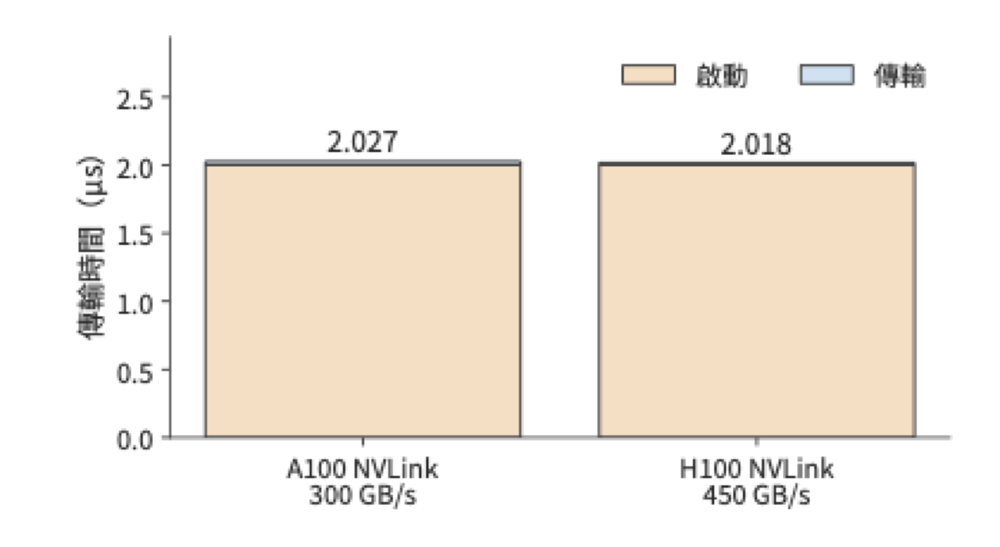
圖 4-27 一次 8 KiB 傳輸的啟動與傳輸時間。固定啟動開銷 2 μs，NVLink 從 A100 的每方向 300 GB/s 換成 H100 的 450 GB/s，只縮短很薄的藍色傳輸項。
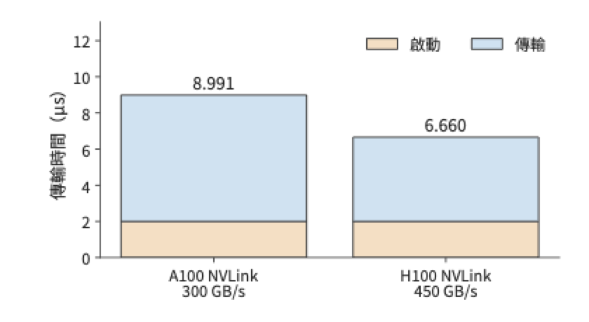
圖 4-28 一次 2 MiB 傳輸在相同啟動條件下的時間。藍色傳輸項佔主要部分，換成 H100 的 NVLink 帶來更顯著的收益；本圖縱軸範圍與上一圖分別標註。
令兩項相等，就得到資料量的轉折點：
對本例的活化值，這對應 \(M\approx109.9\)，即從 110 行起，傳輸時間才超過固定開銷。鏈路越快，轉折點越大，更多的傳輸落在固定開銷主導的一側。小於這一規模時，把多次傳輸合併成一次，能降低每份資料分攤的啟動開銷；大於這一規模時，減少位元組或提高頻寬的收益更明顯。把多份已就緒的資料合併傳送，會減少啟動次數；等待尚未就緒的資料以合併成更大的包，則會增加排隊時間。傳輸的粒度因此也涉及吞吐與回應時間的取捨。
若一次執行有 100 次必須依序執行的小資料量交換，每次 2 μs，僅固定開銷就有 200 μs。跨伺服器時固定開銷更大：兩臺 HGX H100 伺服器共 16 張卡做一次 16 bytes 的全歸約（AllReduce，把各卡的區域性貢獻合併，並讓每張卡取得完整結果），公開實測約 25 μs，32 100 次這樣的歸約便要 2.5 ms。此時，即使減少部分傳輸資料，總時間也難以明顯縮短，而減少交換輪數可以直接縮短依賴鏈。AllReduce 把多次傳輸與歸約連線起來，第 6 章會分別計算輪數、每條鏈路的傳輸位元組數，以及傳輸與計算能夠重疊的時間。
NVLink、華為 Unified Bus 等互聯提供裝置間的傳輸路徑，完成通知讓接收方在資料到達後開始計算。21
思考：合併傳送如何改變完成時間與首份資料的回應？ 四份 8 KiB 資料依次在 0、1、2、3 μs 就緒。仍取 H100 NVLink 的每方向 450 GB/s、每次啟動 2 μs，在同一鏈路上比較就緒後分別傳送與等齊後合併傳送：所有資料何時送達？第一份資料又何時可供接收方使用？
4.6 模型需求如何推動架構演進¶
第 4.2—4.5 節分別分析了計算、儲存、搬移和互聯。本節把這些部件放回 NVIDIA、昇騰、Apple 的代際變化中，計算新增機制究竟減少了什麼工作、改變了哪項資源需求，再解釋這些變化如何回應模型負載。
以下逐項比較矩陣單元、數值格式、資料通路和容量的變化；每次保留同一模型工作量，只改變正在考察的硬體或表示方式。硬體參數與復算見配套計算記錄。45
4.6.1 NVIDIA：矩陣、精度與資料路徑分別帶來多少收益¶
Tensor Core 的價值，先用同一塊晶片上的兩條路徑計算。 Volta V100 SXM2 的普通 FP32 峰值為 15.7 TFLOP/s，Tensor Core 的 FP16 輸入、FP32 累加峰值為 125 TFLOP/s，HBM2 頻寬為 900 GB/s。仍取本章的 \(4096\times4096\) 投影，輸入與權重以 FP16 儲存，結果也寫為 FP16；普通路徑將運算元轉換到 FP32 後執行乘加，Tensor Core 路徑直接執行混合精度矩陣乘加，即輸入用 FP16、累加用 FP32。兩條路徑讀寫同樣的資料。40
一次處理 4,096 行，矩陣計算量為 \(2\times4096^3\approx137.4\) GFLOPs，輸入、權重、輸出合計 96 MiB。普通 FP32 乘加需要 \(137.4/15.7\approx8.75\) ms，Tensor Core 需要 \(137.4/125\approx1.10\) ms，讀取與寫回則需要約 0.112 ms。矩陣時間降到約八分之一，原因是大量規則乘加交給了專門單元。
再把輸入減為一行。兩條路徑的矩陣時間變成約 2.14 μs 和 0.268 μs，32 MiB 權重連同輸入輸出的傳輸卻需要約 37.3 μs。兩條路徑因此都先受資料讀取限制。同一項 Tensor Core 改進，對大 batch 的矩陣乘法收益顯著，對這次單行呼叫則幫助不大，要加快的仍是權重讀取。
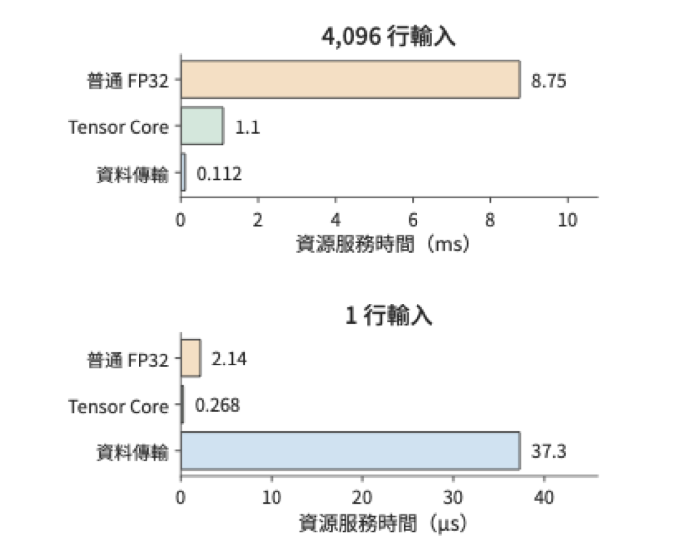
圖 4-29 同一 V100 上的 Q 投影。4,096 行時，Tensor Core 大幅縮短矩陣計算；一行時，兩條計算路徑都短於權重傳輸。上下兩組使用分別標註的時間單位。
精度演進同時改變數值範圍、儲存量和執行指令。 Turing 在 Tensor Core 中加入 INT8、INT4，擴充低位元整數推理；Ampere 增加 BF16、TF32 和 2:4 結構化稀疏；TF32 在矩陣乘法中保留 FP32 的指數範圍、縮短尾數，2:4 稀疏則按每四個元素中兩個非零值組織計算。Hopper 的 Transformer Engine 將 FP8 矩陣指令與縮放管理結合，Blackwell 進一步支援分塊縮放與 FP4。395
以其中加入的 BF16 為例。FP16 和 BF16 都佔兩位元組，換成 BF16 後，前面的 32 MiB 權重保持不變。浮點數用有效數字乘以二的指數冪表示數值；正規數將有效數字標準化，次正規數則在更小的數值區間逐漸減少有效位數。BF16 使用八位指數，最小正規數約為 \(1.18\times10^{-38}\)；FP16 使用五位指數，最小正規數約為 \(6.10\times10^{-5}\)，最小正次正規數約為 \(5.96\times10^{-8}\)。一個 \(10^{-8}\) 的梯度直接舍入到 FP16 會變為零，BF16 仍能表示。這減少了訓練時為避免溢位、下溢而調整縮放的需求。代價是有效數字較少：在 1 附近，BF16 相鄰數的間隔為 \(2^{-7}\)，FP16 為 \(2^{-10}\)。低精度輸入配 FP32 累加，分別處理輸入表示與長內積累積誤差。46
再看儲存量。沿用第 4.2.4 節每 32 個值共享一位元組 scale 的分塊格式；MX 是這種微縮放（microscaling）格式的名稱。MXFP8 需要 \(16+0.5=16.5\) MiB，MXFP4 需要 \(8+0.5=8.5\) MiB。以 RTX 4090 的 1,008 GB/s 頻寬讀取這份 BF16 權重需 33.29 μs；以 RTX 5090 的 1,792 GB/s 讀取同一份 BF16 權重需 18.72 μs，讀取 MXFP4 權重則需 4.97 μs。前一步來自頻寬提高，後一步來自位數與分組表示改變。
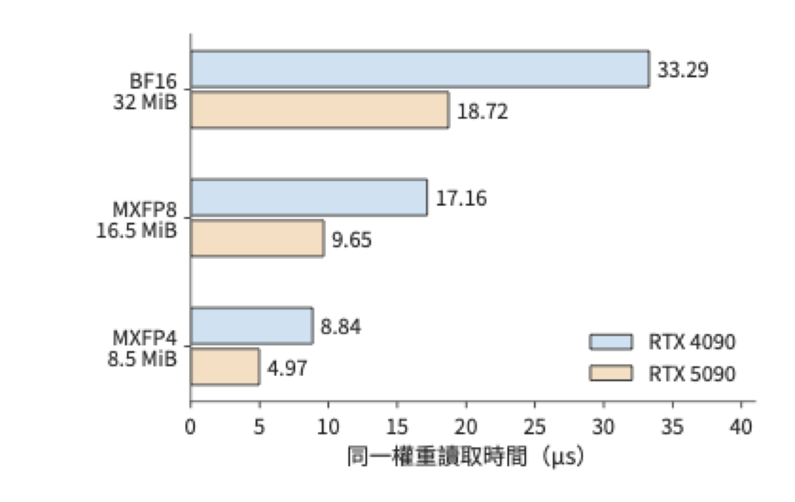
圖 4-30 同一個 4096×4096 權重的儲存與讀取預算。每 32 個低精度值共享一個一位元組 scale。位寬從 BF16 降至 MXFP4 後，權重與 scale 合計從 32 MiB 減至 8.5 MiB。
從 33.29 μs 到 4.97 μs，權重讀取預算縮小到約 1/6.69。這筆收益由兩部分相乘：頻寬約提高到 1.78 倍，儲存量縮小到約 1/3.76。原生低精度矩陣路徑直接處理壓縮表示，省去第 4.2.4 節先展開路徑中的高精度權重副本。
矩陣越來越快以後，架構開始減少它前後的準備與等待。 Ampere 的非同步複製省去全域記憶體到共享記憶體的暫存器中轉；Hopper 的 TMA 接手多維地址生成與搬移，並配合非同步矩陣執行；Blackwell 資料中心 SM100 用張量儲存（Tensor Memory，TMEM）儲存矩陣累加結果。這三項改動分別改變搬移指令、通用暫存器佔用和中間結果存放位置。41
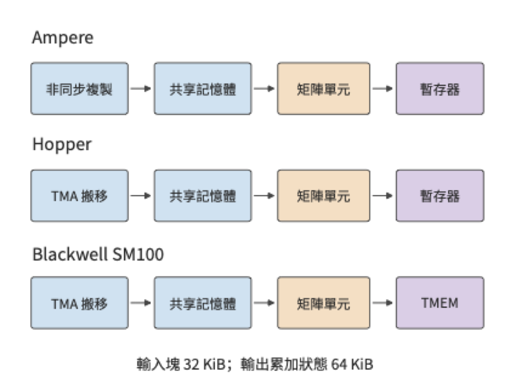
圖 4-31 從非同步複製、TMA 到 TMEM，專門部件承擔更多資料準備與累加狀態管理。藍色表示資料儲存與搬移，橙色表示矩陣計算，紫色表示累加結果。
第 4.3.2 節的計算塊需要 32 KiB 輸入和 64 KiB 累加結果。三組輸入與一組結果合計 160 KiB，TMEM 獨立承擔其中的 64 KiB，通用暫存器便可用於其他執行緒狀態。這就是新增專用儲存給工作駐留帶來的直接變化。
再往後一代，Rubin 的 FP32 指數吞吐提高到 Blackwell 的 2 倍，BF16／FP16 指數吞吐提高到 4 倍，回應了例 4-1 中矩陣加速後暴露的指數瓶頸。Rubin 還允許 TMA 更新專家地址與步長：MoE 切換專家時，矩陣形狀可以保持不變，只需切換權重位置，描述符更新由此減少重複的地址準備。42
消費級、工作站和資料中心產品，怎樣放進同一張表？ 固定 BF16 輸入、FP32 累加、稠密矩陣計算，參數如下。RTX 3090、4090、5090 分別採用 Ampere、Ada、Blackwell；A100、H100 分別採用 Ampere、Hopper。45
| 型號與產品線 | 容量 GB | 頻寬 GB/s | BF16／FP32 稠密矩陣 TFLOP/s |
|---|---|---|---|
| RTX 3090，消費級 | 24 | 936 | 71.0 |
| RTX 4090，消費級 | 24 | 1,008 | 165.2 |
| RTX 5090，消費級 | 32 | 1,792 | 209.5 |
| RTX PRO 6000 Blackwell，工作站 | 96 | 1,792 | 503.8 |
| A100 80GB SXM，資料中心 | 80 | 2,039 | 312.0 |
| H100 SXM，資料中心 | 80 | 3,350 | 989.4 |
| H200 SXM，資料中心 | 141 | 4,800 | 989.5 |
RTX 3090 與 4090 容量相同，BF16 矩陣速率約提高到 2.33 倍，頻寬卻只提高約 7.7%。前者主要縮短大矩陣計算，後者才直接縮短單行權重讀取。RTX 5090 的容量提高到 32 GB，頻寬再提高到約 1.78 倍；新增的 FP4 路徑還為能用低精度的模型提供了另一種執行方法。這三代產品分別改變了矩陣處理、權重讀取和模型駐留的資源預算。
RTX PRO 6000 與 RTX 5090 頻寬同為 1,792 GB/s，工作站卡的主要增量包括 96 GB 帶 ECC 的視訊記憶體、更高的 BF16／FP32 累加吞吐，以及多實例 GPU（MIG）功能；MIG 將一塊 GPU 劃分成資源相互隔離的實例。對相同大小的權重流式讀取，兩者的頻寬預算相同；對大矩陣或超過 32 GB 的常駐資料，結果就不同。SM120 與 SM100 是兩種不同的 SM 指令架構。消費級與工作站 Blackwell 採用 SM120；B200 等資料中心 Blackwell 的 SM100 使用前面介紹的 TMEM 和相應矩陣指令，軟體按目標架構選擇 kernel。48
資料中心卡還提供 HBM 與面向多卡的高速互聯。A100 SXM 的 NVLink 雙向聚合頻寬為 600 GB/s，H100 SXM 為 900 GB/s，換成單向傳送分別為 300、450 GB/s。按第 4.5 節的方法，傳送 64 MiB 資料的鏈路序列化時間（資料量除以單向頻寬）分別約為 224、149 μs。計算規模增加後，張量並行（把同一層內的矩陣分給多張卡計算）每層的通訊、訓練梯度交換和專家 dispatch 會反覆使用這些連線。RTX 4090、5090 沒有 NVLink；RTX 3090 支援雙卡 NVLink。第 6、7 章會用這些鏈路參數計算張量切分、梯度交換與專家 dispatch 的時間。48
回到計算與頻寬兩項的比較：H100 相對 A100，BF16 矩陣速率提高到約 3.17 倍，頻寬提高到約 1.64 倍，同時增加 FP8、TMA 和新的協作機制。H200 相對 H100，則主要增加容量與頻寬，表中的 BF16 矩陣速率基本相同。這兩組變化分別對應「計算與執行組織一起改」和「保持計算能力、增強儲存」。第 4.8.2 節代入模型工作後，就能判斷哪一組增量更有用。
4.6.2 昇騰：從 CNN 的卷積展開，到 Transformer 的矩陣與向量交接¶
早期昇騰 910（後面的代際比較中稱作 910A）設計時，ResNet 等卷積神經網路（CNN）佔據了大部分訓練負載。筆者的設計回顧記錄了這一背景；DaVinci 論文進一步給出 Scalar、Vector、Cube 和 MTE 的分工。MTE 包含 img2col、轉置和解壓模組，其中 img2col 在資料搬移過程中把卷積視窗組織成矩陣輸入。先計算這項專用能力在 CNN 中節省了什麼，再把負載換成 Transformer。47
卷積展開為何值得交給硬體？ 取一個 ResNet 式的 \(3\times3\) 卷積，輸入為 \(56\times56\times64\)，輸出通道數為 64，步長為 1，透過填充（padding）保持空間尺寸。輸入以 FP16 儲存，佔 \(56\times56\times64\times2=401,408\) bytes，約 0.383 MiB。每個輸出位置使用九個相鄰位置的 64 個通道，展開矩陣為 \(3136\times576\)，佔約 3.445 MiB，是原輸入的九倍。
若先在 HBM 中生成展開矩陣，再由矩陣乘法讀入，額外發生一次 3.445 MiB 寫入和一次讀取，共 6.891 MiB。早期 910 的 HBM 頻寬為 1.2 TB/s，僅這筆展開矩陣的寫讀就佔約 6.02 μs 的頻寬時間。MTE 在片上搬移時完成視窗展開，便省去這份 HBM 中間副本的寫讀。輸入視窗在片上組織後直接送入矩陣計算，HBM 中保留原始輸入和權重。44
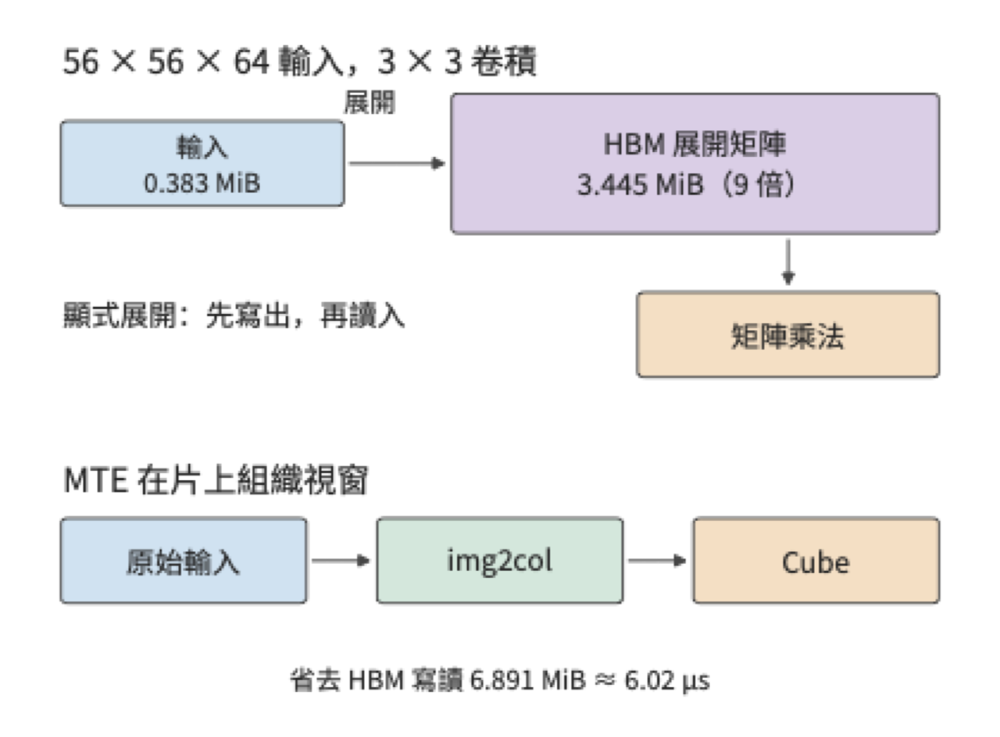
圖 4-32 同一個 3×3 卷積的兩條準備路徑。顯式展開形成九倍大小的中間矩陣；MTE 在片上組織視窗，省去 HBM 上 6.891 MiB 的中間結果寫讀。
再看計算分工。該卷積需要 \(2\times3136\times576\times64\approx231.2\) MFLOPs。DaVinci 論文給出的 Ascend-Max Cube 為每週期 8,192 FLOPs，因此矩陣服務時間為 28,224 週期。輸出 ReLU 只處理 200,704 個元素；按 256 bytes 向量寬度，一組可容納 128 個 FP16 元素，共 1,568 組。卷積的矩陣計算量與後處理相差懸殊，Cube、Vector 和展開硬體各自承擔明確的工作。
換成注意力，資源比例和資料方向一起變化。 \(128\times128\)、頭維度 128 的注意力塊，QK 與 PV 合計約 8.39 MFLOPs，在同一 Cube 速率下為 1,024 週期。Softmax 需要計算 16,384 個指數，並執行最大值歸約、求和與歸一化。按 256 bytes 的向量寬度，一組 FP32 資料有 64 個值，單是指數就要處理 256 組。要讓指數階段不超過矩陣的 1,024 週期，指數部分需要平均每四周期處理一組，也就是每週期 16 個指數結果。隨後執行歸約與歸一化，形成 PV 的輸入。
同一 Cube 上，CNN 卷積的矩陣工作佔 28,224 週期，注意力塊只佔 1,024 週期；向量工作卻從簡單 ReLU 變成指數、歸約與歸一化。DaVinci 論文的 BERT 分析中，多數層由 Cube 時間主導。把注意力單獨拆開後，可以看到 Softmax 對向量吞吐提出的新需求。44
在 CNN 中發揮作用的卷積視窗展開，在 Q、K、V 投影上沒有工作可做，因為投影輸入已經是矩陣。注意力反而需要把 QK 的結果交給 Vector 做 Softmax，再將機率交回 Cube 做 PV。img2col 節省的卷積展開工作，與這兩次矩陣、向量交接所需要的工作不同；負載轉變以後，新增硬體資源的重點也隨之轉移。
獨立排程以後，交接路徑怎樣影響速度？ 910B 所在 Atlas A2 將矩陣核 AIC 與向量核 AIV 分開控制；910C 進一步採用雙 die，每顆 die 有 24 個 AIC 和 48 個 AIV。分離控制讓不同工作獨立推進，AIC 與 AIV 則透過全域地址空間交換結果，實際資料經過快取層次。CloudMatrix384 在 MLA 中壓縮 KV 狀態，透過融合與動態分塊安排矩陣和向量工作；MTP 一次處理多個預測位置，又改變了這些計算的行數。44
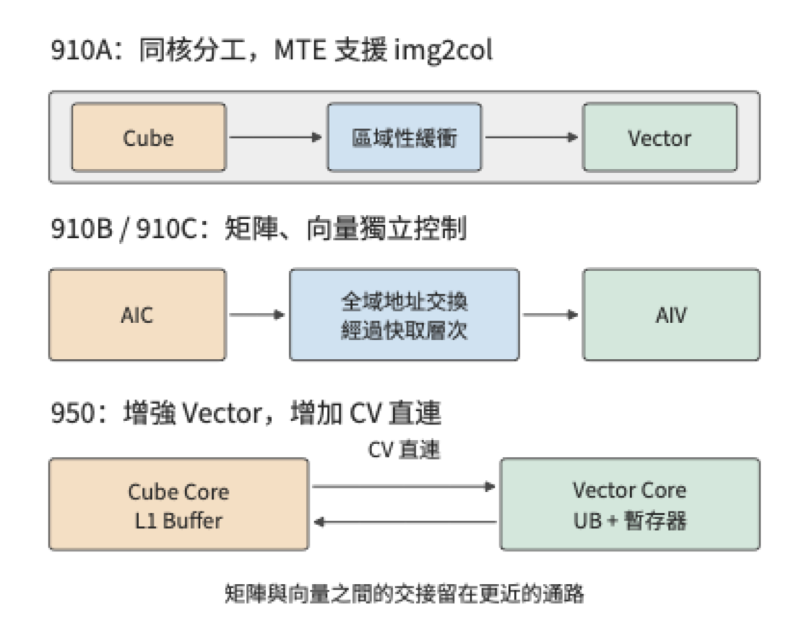
圖 4-33 早期同核分工、910B／910C 的獨立控制，以及 950 增加的 CV 直接通路。計算單元的配比與結果交換的路徑共同決定融合運算子的效率。
用同一個注意力塊計算介面工作量。分數與機率各按 FP32 交接，每個張量佔 64 KiB。一次交接經過外層交換介面寫出、讀入，共 128 KiB；QK→Softmax 和 Softmax→PV 兩次合計 256 KiB。若兩次交接都由同一外層介面承擔，要在 1.024 μs 內完成，該介面需要約 256 GB/s。把 DaVinci 論文中每核分配的 94 GB/s 末級快取（LLC）頻寬代入，這筆工作需要約 2.79 μs，已經超過 1 GHz 下 Cube 的 1.024 μs 矩陣服務時間。矩陣計算即使繼續加快，外層介面仍需搬完這些位元組。
昇騰 950 的下一步改動正針對這條外層介面：在 Cube 的一級緩衝 L1 與 Vector 的統一緩衝（Unified Buffer，昇騰文件簡寫為 UB，與第 6 章的互聯 Unified Bus 並非同一概念）之間增加 CV（Cube–Vector）直接通路。兩次各 64 KiB 的中間張量透過直接連線交接，共傳遞 128 KiB，原來外層介面的 256 KiB 寫讀由此移出。若要求這條直接通路在 1.024 μs 內完成兩次交接，需要約 128 GB/s；若交接格式改為 FP16／BF16，需求再減半至約 64 GB/s。
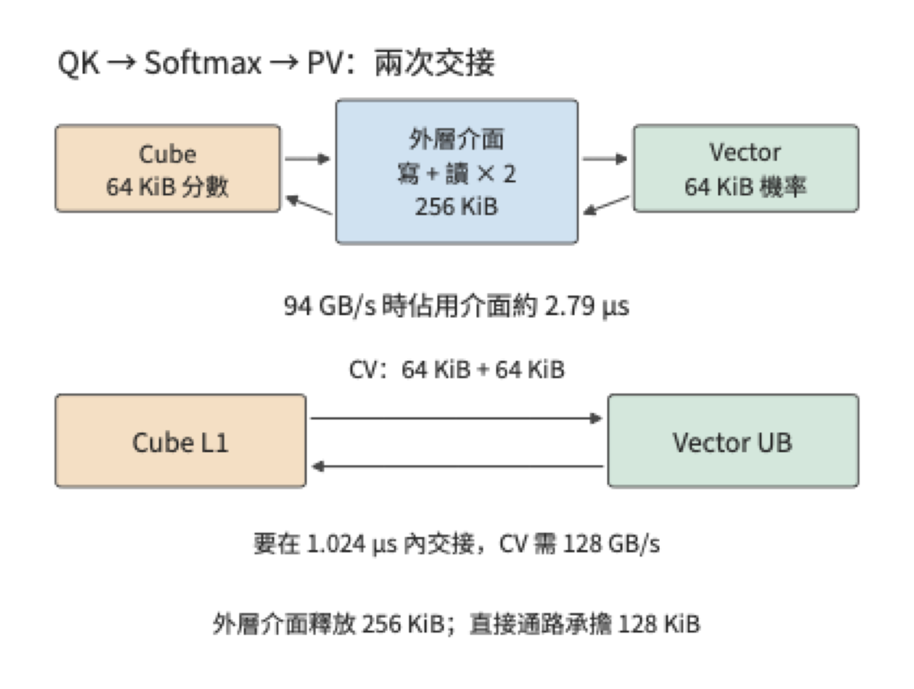
圖 4-34 同一注意力塊的兩次交接。外層交換介面承擔寫出和讀入共 256 KiB；直接 CV 通路傳遞兩個 64 KiB 張量，將這筆流量移出外層介面。在 1.024 μs 內完成交接，對應直接通路的頻寬需求為 128 GB/s。
950 同時將單個 Vector Core 的 FP16／FP32 吞吐提高一倍，在統一緩衝與向量算術邏輯單元（ALU）之間增加暫存器檔案，並最佳化 Softmax 與活化函數 GELU 的執行。對相同普通向量工作 \(F_v\)，\(F_v/P_v\) 降為 \(F_v/(2P_v)\)；如果原來向量階段是矩陣階段的兩倍，這項改動能把二者重新配平。按前面的注意力塊，指數吞吐需要達到每週期 16 個結果。新增 NDDMA 承擔多維地址與佈局準備，BufferID 用緩衝區標識組織同步交接。6
950 的低精度也可以沿同一工作量理解：同頻 FP8 類矩陣計算速率為 FP16 的兩倍，MXFP4 為四倍。對固定矩陣 \(F\)，計算服務時間依次為 \(F/P\)、\(F/(2P)\)、\(F/(4P)\)；但 FP32 分數與機率的兩次交接仍是原來的大小。只有同時改變交接路徑、格式或佈局，介面工作才會下降。矩陣、向量和 CV 通路一起演進，才能把區域性加速變成整段注意力的收益。
4.6.3 Apple：大容量統一記憶體，如何換算為模型執行能力¶
Apple 的 CPU、GPU 和獨立 Neural Engine 共享統一記憶體。統一記憶體省去了處理器之間的資料複製，也讓本地執行的模型能使用較大的記憶體池。下面先計算統一記憶體能夠容納的模型，再計算生成一個 token 需要讀取的資料量。
先核對容量與頻寬的代際關係。M1 Ultra 的代表設定為 128 GB、800 GB/s；M2 Ultra 擴充到 192 GB、800 GB/s；M3 Ultra 的 80 核 GPU 設定有 256 GB 和官方記錄的 512 GB，兩者均為 819 GB/s。M4 Max 也有 128 GB 設定，頻寬為 546 GB/s。49
容量翻倍，哪些時間會改變？ 先保持模型、精度和 batch 不變。M3 Ultra 從 256 GB 增至 512 GB，頻寬仍為 819 GB/s，同一執行的 \(V/R\) 完全相同。M1 Ultra 換成 M3 Ultra，頻寬從 800 增至 819 GB/s，讀取速度只增加約 2.4%。容量的增量讓更多權重、KV 或請求駐留，頻寬的增量才直接改變同一批資料的讀取時間。
取 Qwen3-8B、BF16、單請求、8,192 位置，本書張量清單給出每步權重與 KV 的介面載荷約 16.345 GB。M1／M2 Ultra 的讀取下界為 \(16.345\ \mathrm{GB}/(800\ \mathrm{GB/s})\approx20.43\) ms，M3 Ultra 為 \(16.345\ \mathrm{GB}/(819\ \mathrm{GB/s})\approx19.96\) ms，M4 Max 為 \(16.345\ \mathrm{GB}/(546\ \mathrm{GB/s})\approx29.94\) ms。同樣是 128 GB，M1 Ultra 讀取這一步資料比 M4 Max 少用約 9.51 ms。45
容量的主要價值，用大型 MoE 更容易看清。 Qwen3-235B-A22B 採用本書的 4-bit 儲存方案，連同 scale 與保留高精度的張量，常駐權重約 123.142 GB。單請求、8K 上下文再加 KV 和 2 GiB 工作區，合計約 126.867 GB。128 GB 整機只餘約 1.13 GB；給作業系統和其他應用再預留 8 GB 後，需要約 134.87 GB。256 GB 或 512 GB 的設定則有足夠空間容納這一預算。
MoE 每步只存取選中的專家。相同單請求每步的權重與 KV 介面載荷約 13.697 GB，在 M3 Ultra 上需要約 16.72 ms，而不是將 123.142 GB 全部權重每步讀一遍得到的約 150 ms。對 MoE，全部權重決定容量，當前選中的專家決定每步權重讀取。大型 MoE 因而能同時表現為「需要大記憶體」和「每步讀取相對較少」。15
再代入第 4.3.3 節的八請求路由結果。集中與分散路由的每步讀取量分別為 24.737 GB 和 75.967 GB，在 M3 Ultra 上對應 30.20 ms 和 92.76 ms。每步產出八個 token，讀取吞吐預算分別為 \(8/0.03020\approx265\) token/s 和 \(8/0.09276\approx86\) token/s。256 GB 與 512 GB 設定可以容納相同的八請求任務，路由複用決定了這裡兩組讀取預算的差別。
區域性儲存和 GPU 專用單元怎樣加入這組計算？ M3 引入 Dynamic Caching，按執行需求分配 GPU 區域性記憶體；M4 延續這一組織。這些機制影響工作駐留和片上資源利用，模型容量則由統一記憶體決定。M5 又在每個 GPU 核內加入 Neural Accelerator，並透過 Metal 4 Tensor API 等介面使用；獨立 Neural Engine 繼續存在。GPU 內專用單元加速矩陣處理，資料準備與一般運算繼續由 GPU 程式組織。438
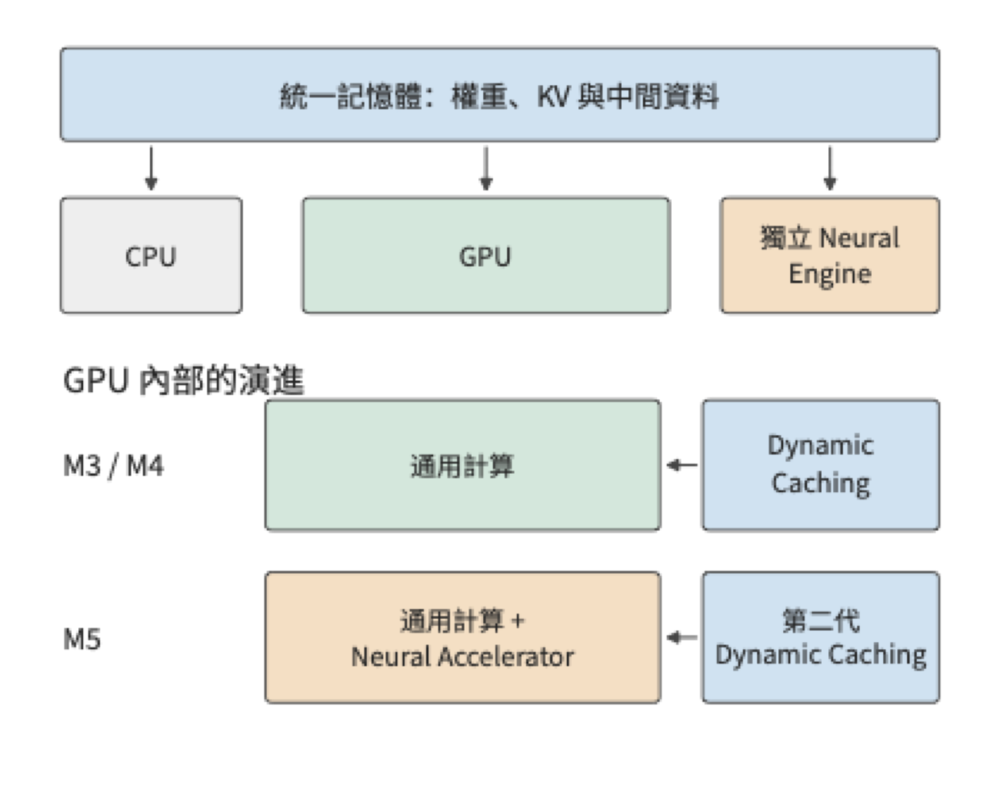
圖 4-35 統一記憶體負責整機的資料容量，Dynamic Caching 管理 GPU 區域性資源，M5 的 Neural Accelerator 增加 GPU 內專用計算能力。三者分別進入容量、駐留和計算時間的分析。
記憶體頻寬也在逐代提高：基礎 M4 到基礎 M5，統一記憶體頻寬從 120 增至 153 GB/s，提高約 27.5%。前面 32 MiB 權重的讀取時間從約 279.6 μs 降至 219.3 μs，縮短約 21.6%。Apple 公佈 M5 的 GPU AI 峰值超過 M4 的四倍；同一單行投影的權重讀取仍由上述頻寬決定。增加輸入行數以後，權重讀取由更多計算共同分攤，新的矩陣單元才更容易成為主要收益來源。這一現象與 V100 上兩種行數的結果完全對應。8
這些演進把圖 4-3 的回饋關係落實為資源變化：大矩陣推動專用乘加，Transformer 增加向量與交接需求，大型 MoE 擴大常駐容量需求。
人腦提供了另一種組織計算的參照：神經元負責更新狀態，突觸儲存連線強度並參與訊號傳遞，記憶和計算分布在高度並行的網路中。區域性連線、稀疏活動、事件驅動和三維組織共同縮短了許多訊號路徑。現有神經形態晶片和存內計算裝置嘗試借鑑其中一部分原則；在數位晶片中，對應的工程方向則是擴大區域性緩衝、提高記憶體頻寬、縮短互聯距離，並讓資料盡量在靠近計算的位置完成複用。
4.7 專用架構¶
前幾節透過複用、流水與區域性提高通用加速器效率。如果負載中有些條件長期保持穩定，還可以把這些條件直接用於硬體設計：固定運算規則、固定通訊次序，甚至固定權重。專用化減少某些工作，也把更多資源集中到剩餘工作上。
4.7.1 TPU¶
TPU v1 的推理計算以規則矩陣乘法為中心。\(256\times256\) 個乘加單元構成陣列，權重經片上先進先出佇列（FIFO，按進入次序取出的緩衝）載入到陣列，輸入從 Unified Buffer 送入，結果儲存在獨立累加儲存中，再交給活化單元。一條指令可以描述較大規模的矩陣運算，區域性連線反覆傳遞運算元，減少每次乘加所需的控制和遠距離存取。4
一塊 \(256\times256\) 的 8-bit 權重為 64 KiB。若只處理一行輸入，完成 \(2\times256^2=131\,072\) 次操作，每位元組權重對應兩次操作；處理 256 行時，完成約 33.6 M 次操作，每位元組權重對應 512 次。權重保持不變，計算量增至原來的 256 倍，正是第 4.1 節投影複用關係在陣列中的實作。
要取得這種收益，陣列需要連續的輸入行。權重 FIFO 能容納四塊這樣的權重塊，權重載入與計算可以透過緩衝銜接；輸入不斷送入陣列時，獨立的累加儲存負責儲存部分和。大陣列、輸入緩衝和權重佇列因此互相配合：陣列提供乘加單元，緩衝保證這些單元持續獲得所需的運算元。
陣列啟動時，運算元還要沿連線傳播到各計算位置；結束時，結果要彙集輸出。連續計算的塊數越多，每塊分攤的流水線填充與排空時間越少，小任務則更容易受到這些固定步驟影響。
負載發生變化後，硬體各部分的配比也需要調整。訓練增加可寫狀態、梯度與加速器間交換；長上下文生成增加 KV 佔用，並要求每個生成步驟等待前一步結果。Google 的 TPU 8t／8i 把訓練與取樣服務分開組織，體現了不同階段對矩陣、向量、儲存和互聯的需求。22 TPU 的共同思路是圍繞已知工作安排資源，而具體配比隨主要負載變化。
4.7.2 Groq、Graphcore 與 Cerebras¶
將更多資料留在片上，可以減少遠距離存取。沿著這一思路，可以把計算和儲存分散到許多區域性單元，也可以進一步增大晶片，在片上容納更多這樣的單元。二者都讓大量資料由附近的計算單元使用，也都需要安排單元之間的交換。
Groq 的張量流處理器（Tensor Streaming Processor，TSP）由編譯器預先安排張量的生成、傳輸和使用時刻。Graphcore 的智慧處理單元（Intelligence Processing Unit，IPU）由許多帶有區域性儲存的計算單元（Graphcore 稱之為 tile）組成，各計算單元透過計算、同步和資料交換協作完成任務。Cerebras 把大量計算與儲存鋪在晶圓尺度上，第三代晶圓級引擎 WSE-3 的片上 SRAM 為 44 GB。SRAM 適合直接整合在計算晶片內，用面積換取低延遲存取。23 這些設計在不同尺度上實作區域性：儘量縮短通訊路徑，讓反覆使用的資料靠近計算。
分散式容量的難點在於各處需求並不相同。某一單元釋放了儲存空間，其他單元也無法直接把這部分空間當作自己的本地儲存；要重新平衡，必須遷移資料或移動計算。路由不均的專家模型尤其容易出現這種情況：總量相同，集中到少數專家的請求會使少數計算單元更忙。
區域性儲存的不均衡可以靠重新分配任務來緩解，但另有一個問題隨服務規模加劇：KV 總量增加。沿用 Qwen3-8B，每條包含 8,192 個 token 的請求，其 BF16 KV 是 1.125 GiB。Groq TSP 每顆晶片有 220 MiB SRAM，23 僅存放 BF16 權重就需要 72 顆晶片。KV 另用晶片儲存，並可均勻切分：一條請求需要 \(\lceil1152/220\rceil=6\) 顆晶片；八條請求共 9 GiB，需要 42 顆；若八條請求的上下文都增至 32,768 個 token，需要 168 顆。
從 6 到 42 再到 168，增加的是可寫狀態，模型權重並未增加。片上儲存權重減少了一類讀取，但持續服務還需要為增長的狀態提供容量。晶片增多後，分佈在各晶片上的 KV 又要跨晶片彙集；容量擴充與通訊需求由同一工作負載同時產生。
晶圓尺度縮短了部分原本跨封裝的連線，但資料仍沿網路經過多個計算單元。把使用同一狀態的計算安排在附近，能夠減少經過的鏈路和同步；把任務均勻攤開則有利於使用更多計算位置。分配計算任務時，既要讓資料在本地複用，又要避免少數單元過忙而其餘單元空閒，這與多 die 放置的原理一致。
4.7.3 固定資料流與固定權重¶
專用化利用執行中已經確定的條件重新分配硬體資源。固定運算子種類，指令和控制就能簡化；固定資料流，通訊就能提前安排；固定數值格式，儲存器和運算單元就能按所需位寬設計；固定權重，則可以為不再變化的參數設計專門的儲存結構。原來用於處理多種情況的控制和資料通路，可以相應簡化。
模型改變後，可重設定設計靠更新連線與排程來適應新的計算。SambaNova 的資料流組織與 FPGA 的可重設定通路，都允許重新設定部分連線和執行順序；固定權重設計則圍繞特定參數組織儲存與計算。23
固定權重並不等於只能完成一種任務。改變輸入，就能讓同一個模型執行不同的上層任務。同一組模型權重既可以處理文件問答，也可以根據程式碼和測試結果提出修改；每次呼叫使用自己的上下文狀態。因而，硬體可以針對共同的模型執行設計權重通路，同時用可寫儲存儲存各條請求的上下文。下面把權重與上下文分別計量，計算這種分工能夠釋放多少容量和頻寬。
筆者的 OpenTallas 專案研究將不可變權重放入掩模 ROM 的架構；掩模 ROM 是一種在製造時就固定儲存內容的只讀儲存器。下面以專案中的 Qwen3-8B 為例，透過公式估算說明「從獨立 ROM 讀取權重、從 HBM 讀寫 KV」的設計如何改變各介面的傳輸量。24 每批只讀取一次本步計算所需的權重，約 \(W=15.1\) GB；每條請求完整讀取 8,192 個 token 的 KV，約 \(K=1.21\) GB。完整駐留權重約 16.4 GB，每步讀取其中參與計算的部分。
先看同一介面原來承擔多少讀取。權重與 KV 共用 HBM 時，每步讀取為 \(W+BK\)。把權重移到獨立 ROM 後，HBM 只承擔 \(BK\)。兩種 HBM 讀取量之比為
\(B=1\) 時，HBM 讀取量從約 16.3 GB 降至 1.21 GB，讀取時間降為原來的約 \(1/13.5\)。\(B=16\) 時，KV 已為約 19.3 GB，總量從約 34.5 GB 降至 19.3 GB，約為原來的 1/1.8。batch 增大已經把權重攤到更多請求上，因此進一步省去權重讀取的相對收益減小。
令 \(BK=W\)，可求得 KV 讀取量與權重讀取量相等的轉折點，約為 \(B=12.5\)；從整數 batch 13 起，KV 讀取量超過權重讀取量。圖 4-36 用水平線與斜線展示了這一轉移。
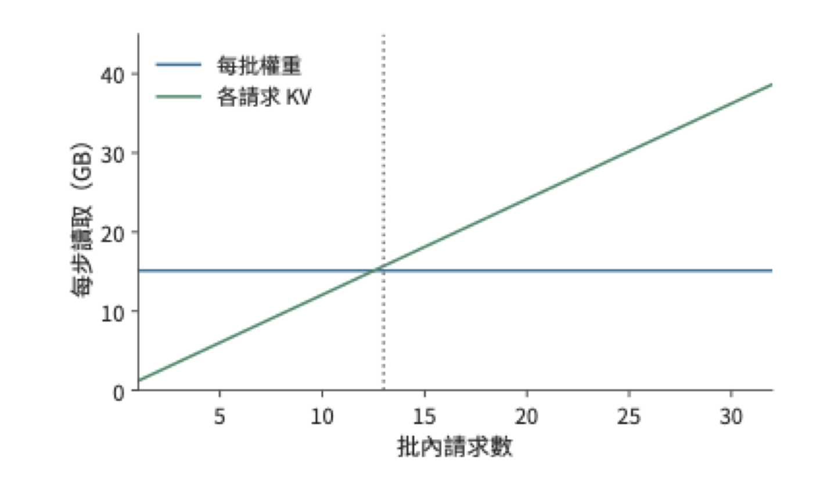
圖 4-36 固定權重的同時，各請求仍獨立讀取 KV。題設每請求保留 8K 上下文，batch 從 13 起 KV 讀取超過共享權重讀取。
有了獨立的 ROM 介面，權重與 KV 就可以同時讀取。設兩條介面的頻寬分別為 \(\beta_{\mathrm{ROM}}\)、\(\beta_{\mathrm{HBM}}\)，保持模型、精度、上下文與 batch 不變，兩條路徑重疊時的儲存時間下界為
提高 ROM 頻寬會縮短第一項，直到 KV 讀取成為較慢的路徑。若目標為單使用者 10,000 token/s，每 token 只有 100 μs，僅 1.21 GB KV 就要求約 12.1 TB/s 的 HBM 頻寬。
獨立 ROM 還釋放了原來存放權重的 HBM 容量。固定 8K 上下文，以一堆 24 GB 的八層 HBM3E（第 4.1.3 節）作 KV 儲存，扣除 2 GiB 工作區後，按每條 1.125 GiB 的 KV 預算，可容納 18 條請求；原來還需存放完整 BF16 權重時只能容納 4 條。37 上下文增長到 32K，每條請求的 KV 讀取增至四倍，前面的權重與 KV 交點便從約 12.5 條降至約 3.13 條。
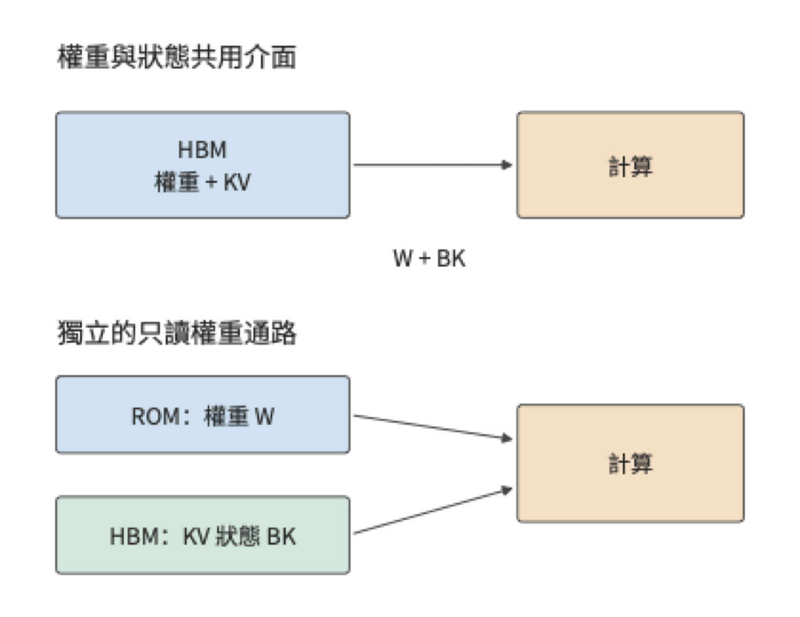
圖 4-37 獨立只讀權重改變兩條儲存路徑。上方權重與 KV 爭用 HBM；下方 ROM 提供權重，HBM 存放可寫狀態。箭頭表示讀取，KV 還需寫入新狀態。
同一個 100 μs 時限也可以用來求計算單元數量。工作負載取自該專案的歷史執行記錄：一組張量操作，共計 15,134,641,792 次。設每條運算通道（lane）在 1 GHz 下每週期完成一次乘加（FMA），100 μs 內所需的運算通道數至少為
256 條運算通道完成這些操作需約 29.6 ms。若分給矩陣計算的時間只有 40 μs，且有效利用率為 60%，需要 315,306 條運算通道，約為最初所需通道數的 4.2 倍。時間預算越緊，留給等待的餘量越小，必須設定的算力與儲存頻寬就越高。
4.8 根據架構分析效能、選擇加速器¶
第 4.6、4.7 節計算了不同架構如何改變計算、儲存與交換工作。本節把這些結果用於裝置選擇：先合成執行時間模型，再用同一模型比較候選裝置，隨後用實測校準，最後比較完成任務的成本與能耗。
選擇硬體時，還要為後續的切分與排程保留一份可用的資源描述：目標精度與矩陣形狀下的有效算力、各級儲存容量與頻寬、暫存器和共享記憶體限制，以及裝置間的單向頻寬、啟動延遲和共享出口。第 5 章用其中的區域性資源約束 tile（矩陣劃分出的資料塊）、緩衝和併發，第 6、7 章用互聯參數約束跨卡放置與通訊組。同一模型的運算和資料需求不變，但這些需求落到哪一級資源、經過哪些路徑，會改變執行時間與最合適的切分。
4.8.1 從資源預算建立執行時間模型¶
執行時間來自兩種關係：同一硬體單元要依次執行哪些操作，後一項工作要等哪些結果。前者決定各單元需要工作多久，後者決定各步驟的執行順序。
先看共享資源。同一矩陣單元處理兩類各 1 G 次操作的工作，速率分別為 100 和 200 Gops/s，就分別佔用 10 ms 和 5 ms，共 15 ms。第 \(i\) 類工作在資源 \(r\) 上的工作量為 \(w_{r,i}\)，對應速率為 \(p_{r,i}\)，則該硬體單元完成這些操作所需的時間為
權重與 KV 共用記憶體介面時，它們的流量相加；QK 與 PV 共用矩陣單元時，它們的計算時間相加。這些工作即使分佈在不同運算子中，也消耗同一份硬體能力。
再看獨立資源。矩陣和搬移能夠同時推進時，總執行時間至少等於耗時最長的單元完成全部操作所需的時間，所以 \(T\ge\max_r T_r\)。第 4.2 節的穩態分析採用了這一關係：指數運算沒有加快時，矩陣單元提前完成後便會空閒，塊的完成節奏仍由指數決定。
最後加入依賴。設第一階段矩陣需 10 μs、記憶體需 1 μs，第二階段矩陣需 1 μs、記憶體需 10 μs；每階段內部可重疊，第二階段要等第一階段完整結束。於是第一階段用 10 μs，第二階段也用 10 μs，共 20 μs。只把資源總量彙總，會得到矩陣與記憶體各 11 μs；差出的 9 μs 來自階段依賴：第一階段的矩陣計算與第二階段的記憶體存取必須先後進行，無法重疊。25
把這些關係用到具體裝置上，先要選對速率：矩陣單元的運算速率還與輸入和累加精度有關。RTX 4090 的 Tensor Core 執行稠密矩陣運算時的峰值，FP16 輸入與 FP16 累加約為 330 TFLOP/s，FP32 累加約為 165 TFLOP/s；本章 BF16／FP32 投影採用 165.2 TFLOP/s。26 對 8.59 GFLOPs，按這兩個速率計算，分別需要約 26 和 52 μs。後面算出的讀取時間約為 37 μs，因此速率選擇會直接改變計算與讀取耗時的大小關係。
資源耗時與執行依賴確定以後，還可以求出負載變化時的瓶頸轉折點。對本章的 Q 投影，Roofline 模型把這一轉折寫成算術強度與吞吐之間的關係。
設矩陣峰值為 \(P\)，片外頻寬為 \(R\)，投影工作量與存取量分別為 \(F\)、\(V\)。計算與資料傳輸所需的時間分別為 \(F/P\) 和 \(V/R\)。計算與存取充分重疊時，較大者決定時間下界，對應 Roofline 模型的吞吐上界為
這裡的斜線 \(RI\) 描述頻寬能夠支撐多少運算，水平線 \(P\) 描述矩陣單元能夠完成多少運算。兩者在 \(I^*=P/R\) 相交。低於交點時，資料供應較慢；高於交點時，每位元組已對應足夠多運算，計算速度成為新的瓶頸。這條折線就是硬體允許的上限，任何實測點都落在折線之下；實測吞吐與折線的距離，就是第 1.2.2 節定義的利用率。算術強度高於交點時用 MFU 衡量，低於交點時用 MBU 衡量。
沿用第 4.1 節輸入與權重讀一次、輸出寫一次的投影，RTX 4090 在 BF16 輸入、FP32 累加時的矩陣運算峰值為 165.2 TFLOP/s，頻寬為 1.008 TB/s。將同一組 \(F\) 和 \(V\) 代入，得到：2
| 本次處理的 token 數 \(M\) | 矩陣計算時間 | 片外資料傳輸時間 | 兩項耗時的最大值 | 主導資源 |
|---|---|---|---|---|
| \(M=1\) | 約 0.20 μs | 約 33.3 μs | 約 33.3 μs | 記憶體 |
| \(M=256\) | 約 52 μs | 約 37.4 μs | 約 52 μs | 矩陣 |
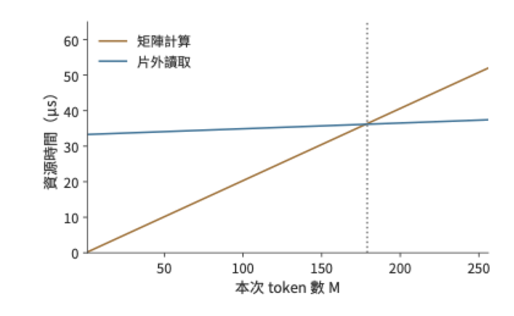
圖 4-38 同一 Q 投影的計算與訪存耗時隨輸入行數的變化。計算量按行數增長，片外存取同時包含固定權重和增長的輸入輸出；從 179 行起計算項較長。
還可以求出轉折發生時的輸入行數。令 \(d=4096\)，第 4.1 節的強度可寫成 \(I(M)=Md/(d+2M)\)。令它等於 \(I^*=P/R\)，得到
代入未經四捨五入的速率數值，\(I^*\approx164\) FLOPs/byte，\(M^*\approx178.1\)。因此從整數行數 179 起，矩陣計算時間超過資料傳輸時間。轉折點把「較大 batch 更適合矩陣單元」變成了可以計算的行數閾值。34
實驗 4-5 · 核心：batch 如何改變不同架構的效能瓶頸
推導並畫出 Q 投影從 1 到 256 行的算術強度，分別將矩陣計算吞吐率、記憶體頻寬提高到原來的兩倍，求計算時間與讀取時間相等時的輸入行數。隨後把注意力與專家矩陣加入資源表，解釋上下文長度和各專家輸入行數的分佈，怎樣改變各單元的處理時間及瓶頸所在。選擇兩種具體加速器，分別用其資源參數估算同一任務的執行時間，並比較瓶頸。
第 4.8.2 節用這一方法從單個投影擴充到整個模型，分別計算 decode 的主要讀取與 prefill 的矩陣工作，並檢查哪些裝置能夠容納所需狀態。
4.8.2 用同一模型比較候選加速器¶
先固定一個便於復算的例子：Qwen3-8B、BF16、單請求，已有 8,191 個歷史位置，本步追加後為 8,192 個。權重常駐約 16.381 GB，KV 約 1.208 GB，工作區取 2 GiB，總預算約 19.737 GB。一次 decode 的主要權重、KV 介面載荷為 16.345 GB。詞嵌入每步讀取當前 token 對應的行，輸出頭讀取完整權重，所以常駐權重與每步權重讀取量不同。15
再計算矩陣工作。Qwen3-8B 有 36 層，隱藏寬度 4,096，前饋寬度 12,288，32 個查詢頭、8 個 KV 頭，頭維度為 128。每層 Q、K、V、O 投影與三次前饋投影的矩陣參數數目為
每 token 的各層線性運算為 \(2\times36W_{\mathrm{layer}}\approx13.89\) GFLOPs。一次 8K decode 的 QK 與 PV 另需 \(4\times36\times8192\times4096\approx4.832\) GFLOPs，輸出頭約 1.245 GFLOPs，共約 19.97 GFLOPs。
再看 prefill：處理 4,096 個新輸入 token 時，線性運算按 token 數增加。因果注意力的可見位置對數為 \(4096\times4097/2\)；每對在 32 個頭上各做一次 QK 內積與一次 PV 累加，合計 \(4\times4096\) 次操作。乘以 36 層，有效 QK、PV 運算為 \(2\times36\times4096\times4096\times4097\)。最後一個位置計算輸出頭，整個 prefill 的矩陣工作約為 61.85 TFLOPs。將這兩個階段分別代入硬體參數表，得到圖 4-39。
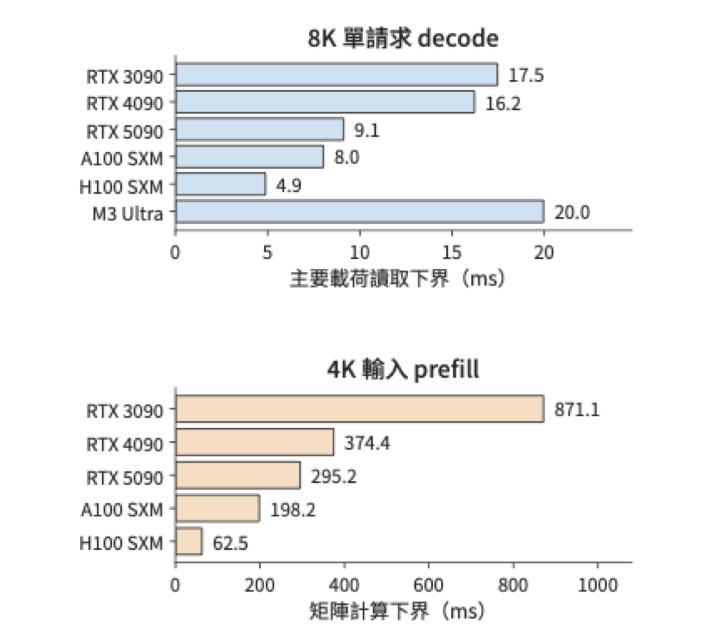
圖 4-39 同一 Qwen3-8B 的兩種階段預算。單請求 decode 更直接反映讀取頻寬，4K prefill 的矩陣預算更直接反映匹配精度的矩陣速率。兩圖橫軸分別標註所計算的時間。
這組結果給出了幾個直接的判斷。3090 換 4090，單請求 decode 的讀取下界只縮短約 7.1%，4K prefill 的矩陣時間卻縮短約 57.0%。A100 換 H100，讀取時間縮短約 39.1%，矩陣時間縮短約 68.5%；再換 H200，讀取時間繼續下降，矩陣時間基本不變。RTX 5090 與 RTX PRO 6000 讀取時間相同，但後者的矩陣吞吐和容量更大。對輸入較長的文件問答，4090 和 H100 的矩陣增量首先縮短 prefill；對單請求持續生成，5090 和 H200 的頻寬增量直接縮短每步讀取。
容量如何改變可選擇的裝置？ BF16 Qwen3-8B 的單請求預算約 19.737 GB，表中的 24 GB 卡能夠容納；增加到八條 8K 請求，總預算約為 28.193 GB，便超過 3090／4090 的 24 GB，進入 5090 的 32 GB 容量範圍。
同樣在本地執行，Qwen3-8B 與 Qwen3-235B-A22B 應怎樣選？ 先比較單請求生成。Qwen3-8B 使用 BF16、8K 上下文，在 RTX 4090、5090、M3 Ultra 上都能駐留。把表中的每步讀取時間換成每秒 token 數，分別得到 \(1000/16.22\approx61.7\)、\(1000/9.12\approx109.6\) 和 \(1000/19.96\approx50.1\) token/s 的讀取上限。該 8B 稠密模型沒有用到 Ultra 的額外容量，5090 的高頻寬直接體現為更高的生成預算。
再換成第 4.6.3 節的 Qwen3-235B-A22B，採用 4-bit 權重、單請求和 8K 上下文。該模型需要約 126.867 GB 的模型、KV 與工作區空間，3090、4090、5090 均無法單卡駐留，M3 Ultra 256 GB 和 H200 141 GB 可以。每步讀取約 13.697 GB，M3 Ultra 用約 16.72 ms，H200 用約 2.85 ms，對應約 59.8 與 350.4 token/s 的讀取上限。Ultra 的大記憶體讓這一 235B 的 MoE 能在一臺本地整機上執行，H200 的高頻寬則把同一步讀取縮短到約六分之一。
多卡執行的張量切分與專家 dispatch 在第 6 章展開。
4.8.3 預測與實測為什麼有差距¶
第 4.8.2 節的裝置比較給出了容量與主要資源預算。執行庫為數學運算子選擇具體 kernel，快取改變片外流量，提交和同步也佔用時間。測量的用途是識別這些執行步驟，補全第 4.8.1 節的時間模型。
先把 Qwen3-8B 的讀取預算換成一次具體的生成任務，放到本書的實測平台 RTX PRO 6000 Blackwell Workstation 上。仍用 BF16、單請求、8K 上下文，每步載荷 16.345 GB，按 1,792 GB/s 的峰值頻寬讀取需 9.12 ms，對應約 109.6 token/s；取這一上下文附近的 128 個 decode 步驟，合計約 1.17 s。
第 8 章的實驗 8-1 在同一張卡上用 vLLM 執行了這一條件：8K 上下文、batch 1，純 decode 迭代耗時的三輪中位數為 25.83 ms。三輪分別為 26.43、16.18、25.83 ms，其中一輪明顯較快，另兩輪相差不到 3%；取中位數，可以避免單獨一輪的偏離影響下面的比較。33 生成速度約為 38.7 token/s，128 步約需 3.31 s；讀取下界只佔實測時間的 35.3%，實測比下界多出約 16.7 ms。
多出的時間並非來自讀取速度：同一實驗的 2K 上下文每步少讀 0.906 GB KV，按峰值頻寬應省約 0.51 ms，實測一輪卻是 26.26 ms，並不比 8K 的 25.83 ms 短。batch 增至 64 時，2K 條件每步讀取增至 34.46 GB，讀取下界為 19.23 ms，實測一輪只增至 29.63 ms，等效頻寬約 1.16 TB/s，為峰值的 65%。可見 batch 1 時每步時間主要由一段與讀取量無關的固定工作決定：實驗以 eager 模式執行，kernel 逐個啟動，此外還有向量運算、取樣與同步。在這套軟硬體上，提高頻寬利用率幾乎不能加快單請求生成；要縮短每步時間，先要減少這部分固定工作，第 5 章討論的 kernel 融合與減少啟動次數，針對的正是這部分時間。batch 增大後，固定工作由更多 token 分攤，讀取才重新成為主要項。
按第 1.2.2 節的定義，35.3% 與 65% 就是這兩種條件下的 MBU。第 1.3.4 節所說的兩類差距在這裡都能看到。下文的計數器記錄將說明，模型中的邏輯讀取請求並不等於 DRAM 流量，快取命中的部分不佔用視訊記憶體頻寬，這一項要修正的是模型口徑；kernel 逐個啟動、主機提交與同步留下的間隙，則是可以去掉的實作開銷。先修正口徑，再去掉開銷，兩步都不能少。
要把多出的時間拆到具體步驟，還需要計時、流量和 kernel 記錄。下面用本書已有的 Q 投影實測，說明如何從這些記錄中找到時間差的來源。
配套實驗在 M2 Max 與 RTX PRO 6000 Blackwell Workstation 上執行相同的 \(K=N=4096\) 投影，輸入、權重、輸出為 BF16。為比較不同的權重存取方式，在每個平台上準備 16 份內容相同、地址不同的 32 MiB 權重。複用組始終使用同一地址，輪換組依次使用不同地址。每輪執行 16 次呼叫，記錄包括主機提交與同步在內的整輪耗時，再除以 16，得到該輪每次呼叫的平均耗時。共執行 11 輪，取這 11 個平均值的中位數。27
| 本次處理的 token 數 \(M\) | M2 Max：複用／輪換 | RTX PRO 6000：複用／輪換 |
|---|---|---|
| \(M=1\) | 約 166／183 μs | 約 42.9／51.9 μs |
| \(M=256\) | 均約 1.835 ms | 約 32.6／33.5 μs |
先看 RTX 單行：輪換比複用約慢 21%。一種自然的解釋是：反覆使用同一份權重，權重就留在了快取裡，減少了 DRAM 讀取。該解釋可以直接檢驗：若少讀權重是差別來源，複用權重時，從片外讀取的位元組數應當更少。實驗另用 NVIDIA 的 GPU kernel 效能分析工具 Nsight Compute，先按指定方式存取權重，再記錄一次待測呼叫，彙總全部 kernel 的存取計數。
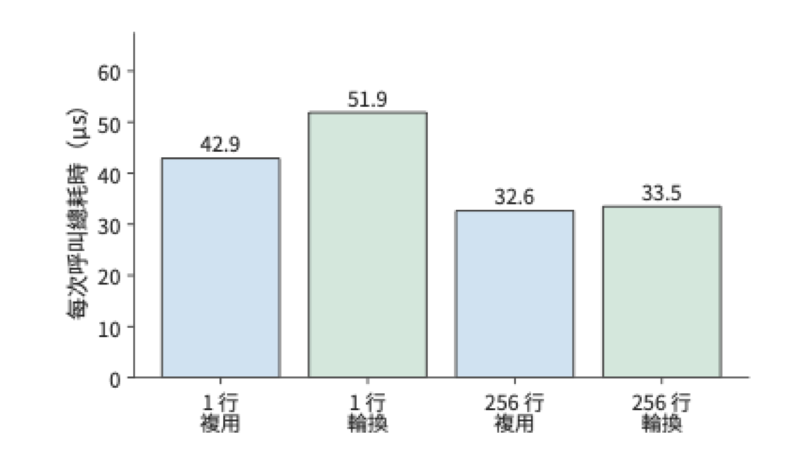
圖 4-40 RTX PRO 6000 的投影總耗時。每個條件測十一輪、每輪十六次呼叫，取每輪平均耗時的中位數；計時包含提交與同步。「複用」表示多次呼叫讀取相同權重地址；「輪換」表示呼叫之間更換權重地址。
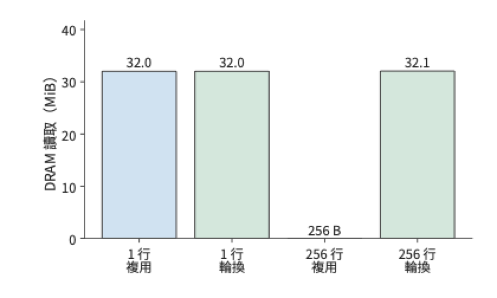
圖 4-41 相同四個條件下另行採集的 DRAM 讀取計數。單行均約 32 MiB，256 行復用為 256 bytes、輪換約 32.1 MiB。存取計數與常規計時分別測量。「複用」與「輪換」分別表示保持和更換權重地址。
單行在兩種權重存取方式下的 DRAM 讀取都是約 32 MiB，恰好對應整份權重的規模。兩種條件讀取了相同規模的片外權重，單行的時間差需要沿提交、執行與等待進一步定位。256 行則是另一種情況：複用同一份權重時只讀 256 bytes，輪換不同的權重副本時約讀 32.1 MiB，但常規計時都在 33 μs 左右。快取改變了片外流量，而呼叫總時間還包含其他計算、傳輸與等待。
第 4.3 節區分的儲存層次在這裡變得可見。256 行的兩種權重存取方式都有約 147 MiB L2 請求，遠大於近乎為零的那次 DRAM 讀取。快取命中只是資料改由片上提供，計算單元的讀取請求和區域性傳輸仍然存在。源程式中的同一份權重，分塊執行後會由多個計算塊反覆請求。
片上請求解釋了為什麼 DRAM 讀取減少後仍有資料存取。再看計算。庫把一次投影拆成了更多步驟：單行呼叫使用一個 GEMV kernel，256 行使用 GEMM 加 split-K 歸約兩個 kernel。split-K 把內積維度上的計算交給多個計算塊，先形成部分輸出，再由歸約合併。這樣能讓更多計算塊並行執行，但也要儲存和讀取部分結果，最後再做一次歸約。因而第 4.1 節的一次數學乘法，在這裡展開成多個階段。
再按 RTX PRO 6000 的參數估算輸入和權重均從片外讀取時的執行時間：BF16 輸入、FP32 累加的稠密矩陣運算峰值約 504 TFLOP/s、頻寬 1.792 TB/s，兩種行數的下界約為 18.7 和 21.1 μs。模型給出矩陣計算與片外讀取所需的時間，計數器揭示快取參與後各級介面的流量，kernel 路徑解釋額外的合併工作；總耗時還包含提交、同步與執行間隙。28
要進一步定位差距，可以把「忙了多久」與「工作時執行得多快」分開。設某硬體單元按理想速率完成全部操作需時 \(S_r\)，實際處於工作狀態的時間為 \(A_r\)，任務總時間為 \(T\)，則
前一項表示工作時的實際速率與理想速率之比，後一項表示工作時間佔總時間的比例。兩個任務都耗時 100 μs，理想計算時間也都是 40 μs。執行第一個任務時，該單元只工作了 40 μs，工作時達到理想速率，但其餘 60 μs 都在等待；執行第二個任務時，該單元工作了 80 μs，速率只有理想值的一半，等待時間則只有 20 μs。兩者整體比值都是 40%，對應的最佳化方向卻不同。
第一個任務更需要提前準備資料、安排更多相互獨立的計算，或減少等待前一步結果的時間，類似第 4.4 節兩槽到三槽的改動；第二個任務更需要改善執行粒度、指令與區域性存取，類似第 4.2 節補齊浪費和分組呼叫的分析。7
實驗 4-6 · 延伸：用 Mac 與 RTX 實測檢驗執行時間預測
根據投影在兩種平台上的實測總耗時，提出兩個能夠解釋耗時差異的原因，再讀取 DRAM、L2 與 kernel 記錄，為每個解釋列出預期現象和實際現象。隨後畫出 256 行呼叫的矩陣、部分結果與歸約路徑，指出需要哪些階段時間才能區分計算單元工作時的執行效率與等待時間。將所得結果與假設輸入和權重均從片外讀取的模型對照。
4.8.4 在容量、速度、功耗與成本之間做選擇¶
第 4.8.3 節得到任務完成時間，本節將其換算為成本與能耗。先比較按使用時間計費的方案，再把空閒時間和專用架構的固定投入計入。
設兩臺整機的小時成本為 \(c_A,c_B\)，完成同一任務的執行時間為 \(t_A,t_B\)。按執行時間計費時，每任務成本與 \(ct\) 成正比，因此
右側給出了每小時成本可以相差多少倍：如果 A 的速度是 B 的兩倍，那麼 A 每小時的成本低於 B 的兩倍時，每個任務仍然更便宜。把小時成本換成平均功率，同一不等式比較的就是每任務能耗。第 4.8.3 節複用組中，Mac／RTX 時間比分別約為 3.9（單行）和 56（256 行）。RTX 一側只計顯示卡，按 RTX PRO 6000 Workstation 的 600 W 功耗上限計算，一次單行呼叫最多耗能約 25.8 mJ，一次 256 行呼叫約 19.6 mJ。M2 Max 的官方資料沒有給出整機功率；由上式反推，Mac 在單行呼叫期間的平均功率低於約 155 W 時，每次呼叫耗能就比 RTX 少，256 行時則要低於約 10.7 W。機器不變，僅改變矩陣尺寸，Mac 要保持能耗優勢，允許的功率就從約 155 W 降到約 10.7 W。28
長期執行的服務還要計算空閒期間的成本。設一臺機器處理請求時每秒生成 \(q\) 個有效 token，每小時用於處理請求的時間比例為 \(u\)，則每小時產出為 \(3600uq\)，每 token 成本為 \(c/(3600uq)\)。生成速度翻倍而利用率減半，每小時產出不變，單位成本也不變。
能耗同樣由功率與時間共同決定。以第 4.8.2 節的單請求 8K decode 為例，設兩張卡都以功耗上限執行、每步用時等於讀取下界：RTX 4090 為 450 W、16.22 ms，每步約 7.30 J；RTX 5090 為 575 W、9.12 ms，每步約 5.24 J。30 功率增加約 28%，每步能耗反而減少約 28%。一般形式為
對長期服務，統計一段時間內的總耗電量，再除以這段時間的有效產出，就能把空閒和預熱期間的耗電一併計入。縮短執行時間可以減少執行任務時的耗電，提高利用率則能減少每個任務分攤的空閒耗電。第 4.1.3 節的能耗分賬給出了一步 decode 耗電的量級估計：單請求、8K 上下文時每 token 0.534 J，其中 0.481 J 用於讀取權重；batch 為 32 時，每 token 能耗降到約 0.068 J。這筆分賬不含控制、時鐘、靜態漏電與空閒期間的功耗，所以用總耗電除以有效產出，得到的每 token 能耗會高於這一估計。52
專用化另有固定投入。設相對通用方案增加的固定成本為 \(F_0\)，每個有效輸出節省可變成本 \(\Delta c\)，回本量為
模型會被更新或替換，因此專用系統能用於該模型的時間有限。設有 \(D\) 臺機器，每臺處理請求時的生成速率為 \(q\)，利用率為 \(u\)，模型可用時間為 \(L\)，總產出為 \(DuqL\)。這段時間內節省的執行成本達到固定投入後，專用方案才算回本。
例 4-3：專用化能否在模型壽命內回本？
增量固定成本為 2,000 萬美元，每百萬合格輸出 token 節省 0.50 美元。部署 100 臺，每臺處理請求時產出 10,000 token/s，利用率 50%，模型經濟壽命一年，每年按 365 天計算。
比較回本所需輸出量與一年可完成的輸出量。 回本量為 \(20\,000\,000/(0.50/10^6)=4\times10^{13}\) token，即 40 萬億。一年產出為 \(100\times10\,000\times0.5\times31\,536\,000\approx1.58\times10^{13}\) token，即約 15.8 萬億。
在一年內回本需要多大的實際服務規模？ 一年產出約為回本量的 39%。在單機速率與利用率保持不變時，至少需要 254 臺執行一年。
模型壽命減半或利用率下降後的回本規模。 模型半年更換，每臺可用時間減半，至少需要 508 臺機器維持給定利用率；若利用率從 50% 降至 25%，結果相同。
本例每年約節省 788 萬美元，低於 2,000 萬美元的固定投入；達到 40 萬億 token 的回本量需要約 2.54 年，超過題設的一年模型壽命。24
實驗 4-7 · 延伸：負載改變後，晶片資源改動是否仍有收益
選擇一種架構和一種典型負載，提出一次資源改動。先用工作量、流量和依賴推導時間變化，再計算增加的容量及減少的等待。隨後改變 batch 或上下文長度，求原有改動不再節省時間時的臨界值。若方案需要額外固定投入，再根據每項任務節省的成本、加速器利用率和模型壽命，求收回固定投入所需的最低服務量。
實驗 4-8 · 延伸：從能耗分賬到功率封頂
沿用第 4.1.3 節的能耗表與 Qwen3-8B 單請求 8K decode 一步的讀取位元組數。（a）把 batch 分別取 8、32、128，分別計算每 token 的權重、KV 與計算能耗，求權重項低於計算項的最小 batch。（b）把上下文改為 32K，求 KV 項等於權重項的 batch，並解釋此後繼續增大 batch 為什麼不再明顯降低每 token 能耗。（c）選擇一張卡的 TDP、峰值算力與 HBM 頻寬，求峰值速率下每 FLOP 的能量預算 \(b\)；設實際每 FLOP 能耗為 \(1.5b\)，按 \(P\propto fV^2\) 分別求電壓不變與電壓隨頻率下降兩種情況下的持續頻率比；再把（a）中 batch 為 32 時一步的能量（32 乘以每 token 能耗）除以持續頻率下這一步的時間，得到平均功率，比較它與 TDP 的差距。
本章小結¶
加速器分析從模型工作量出發：用狀態大小篩選容量，用流量與頻寬計算讀取時間，用矩陣形狀、精度與指令速率計算運算時間，再沿依賴安排執行。三家架構的演進說明，模型需求會改變資源配比。存取計數、kernel 記錄與計時將這些預算落實為執行速度和任務成本。時間與能耗是兩本賬：頻寬決定一步多快，每位元組能耗與複用次數決定一步耗多少焦耳，功率上限又反過來壓低可持續的頻率。第 5 章繼續研究佈局、融合與排程，說明軟體如何用好這些硬體資源。
-
Jouppi 等，In-Datacenter Performance Analysis of a Tensor Processing Unit，ISCA 2017，歸檔論文。 ↩↩
-
A100 架構白皮書、H100 架構白皮書、Hopper Tuning Guide、Blackwell 技術簡報與CUTLASS Blackwell 功能。 ↩↩
-
昇騰 950 官方架構白皮書，§4.1—4.1.6；早期 DaVinci 與 CANN 分離架構的頁級定位見比較筆記。 ↩↩
-
M2 Pro／Max 官方規格、Apple GPU 架構說明、Metal 儲存模式、M5 GPU Neural Accelerator 官方說明。 ↩↩↩↩↩
-
FlashAttention-4，MLSys 2026，論文，§2.2、§3.1.1、公式 1—3 與表 1；單 SM 獨立復算。 ↩↩↩
-
硬體精度審查、DeepSeek V4-Flash 與 Qwen 逐階段資源條件、低精度與執行路徑調研。硬體演進與成本歸因見成本下降調研。 ↩
-
Blackwell 技術簡報，10 TB/s NV-HBI；CloudMatrix384 v2，§3.3.1（910C 每 die 64 GB、1.6 TB/s，die 間每方向 270 GB/s）、§4.2 開頭（decode 中每顆 die 放一個專家）與 §4.2.2；兩款產品的 die 區域性計算見教學推導指令碼的
die_locality項；Vera Rubin 平台、UB 與昇騰核對。 ↩↩↩ -
Inside the Eighth-Generation TPU: An Architecture Deep Dive。 ↩
-
Groq TSP 論文、IPU Programming Model、Cerebras WSE-3 資料表、SambaNova SN40L 論文。 ↩↩↩
-
各階段耗時下界的建模說明；實際模型運算子範圍見Qwen3-8B prefill128 資源結果。 ↩
-
配對投影成本與平均功率條件；RTX PRO 6000 的 600 W 取自硬體輸入表，每次呼叫的能耗與 Mac 持平功率由教學推導指令碼的
energy項算出，見推導資料。 ↩↩ -
主機、DMA 與統一地址的術語見 CUDA Programming Guide。 ↩
-
RTX Blackwell 架構白皮書附錄 A 表 3：RTX 4090 為 24 GB GDDR6X、1,008 GB/s、PCIe Gen 4、TGP 450 W，RTX 5090 為 32 GB GDDR7、1,792 GB/s、PCIe Gen 5、TGP 575 W；A100 80GB 資料手冊，PCIe 4.0 為 64 GB/s（雙向合計）。H2D 與視訊記憶體讀取時間見教學推導指令碼的
host_link項。 ↩↩ -
RTX 4090，128 個在途事務、RTX 4090，4,096 個、RTX 5090，4,096 個、RTX 5090，延遲 800 ns；Mess 的 H100 延遲見其表 I 與圖 3(h)。 ↩
-
實驗 7-3 公開執行記錄核驗，兩臺 HGX H100 原始日誌：16 rank、NCCL 2.26.2，16 bytes AllReduce 非原位 24.96 μs、原位 24.93 μs。 ↩
-
實驗 8-1 batch 掃描及其逐行效率彙總：RTX PRO 6000 Blackwell Workstation，Qwen3-8B BF16，vLLM 0.23.0，eager 模式；每行取每輪純 decode 迭代的中位數，再取三輪中位數。與讀取下界的比值由教學推導指令碼的
measured_decode項算出。 ↩ -
筆者在 RTX PRO 6000 Blackwell Workstation（GB202，188 個 SM，128 MiB L2，SM 頻率實測 2.88 GHz）上的測量，測量說明與方法核查及本書引用的數值摘錄。測量程式為 OpenTallas 倉庫的
tools/gpu_microbench/，CUDA 12.8。測量期間 GPU 由另一負載共用，正文取多次執行的最小值；中位數高 10%–40%。 ↩↩ -
DeepSeek V3 技術報告第 3.5 節，Suggestions on Hardware Design。 ↩
-
DeepSeek V4.1 官方技術報告，第 1、2、3 節與第 6 節；跨章會話的固定條件與復算。 ↩
-
Turing 官方架構白皮書，Turing Tensor Cores 與低精度推理。 ↩
-
Volta 架構白皮書，Tensor Cores 與混合精度章節。 ↩↩
-
Blackwell Tuning Guide、CUTLASS Blackwell 功能說明及 SM100 TMEM 範例；SM120（計算能力 12.0）每個 SM 的 128 KB 一級資料快取與 100 KB 共享記憶體上限見 CUDA 程式設計指南的計算能力表。 ↩↩
-
NVIDIA Rubin GPU 架構說明，MoE 資料搬移、K 維指令吞吐與注意力加速。 ↩
-
DaVinci 架構論文，§3.1—3.4；Ascend C 指南，第 4 章耦合與分離架構；CloudMatrix384 v2，§3.3.1、§4.2.2。 ↩↩↩
-
架構演進量化計算程式與說明、逐項計算結果。參數讀取硬體輸入表，3090 補充自 GA102 官方白皮書表 9；完整模型設定與張量清單沿用本書 calculations。 ↩↩↩
-
A100 架構白皮書，BF16 與數值格式章節；數值範圍、儲存與量化復算。 ↩
-
筆者《網路的智慧應該放在哪裡》，2023 年演講中關於 2016 年 ResNet 設計背景的回顧；DaVinci 架構論文 §3.2、§3.4、表 5 和 Ascend 910 系統，分別給出 img2col、資源配比、每核頻寬與 1.2 TB/s HBM。 ↩
-
RTX PRO 6000 產品規格，ECC、MIG 與產品設定；Hopper Tuning Guide，NVLink；GA102 白皮書，3090 NVLink；Blackwell Tuning Guide及 CUTLASS Blackwell 功能，SM100／SM120。 ↩↩↩
-
Apple 官方設定核對、GPU 與容量組合及硬體表。M3 Ultra 512 GB 由官方釋出稿及 80 核 GPU 整機測試設定記錄交叉確認。M5 Ultra 512 GB／1,200 GB/s 為 2026 年 8 月公佈的規格，512 GB 設定計劃於 2026 年 10 月下旬交付。 ↩
-
何庭波，Huawei』s τ Chip Was Supposed to Melt?，ChinaXiv:202609.00031v1，2026-09-04，歸檔論文，§II—V 與圖 1—2：動態功耗佔比、連線電容、NPU 同效能比較（29 TOPS、0.85→0.55 V、頻率降 63%、功耗降 66%）、DSP 功耗降 25% 與投影面積降 40%。 ↩
-
Dally，Hardware for Deep Learning，Hot Chips 2023 主題演講第 12、51—52 頁：第 12 頁 HFMA 1.5 pJ、HMMA 110 pJ、指令開銷約 30 pJ 與開銷佔比 2000%／22%（45 nm）；第 51 頁能耗表註明取自 Horowitz ISSCC 2014，工藝 45 nm；第 52 頁三級儲存 5／50／640 pJ 每 32 位字，未註明工藝；Fine-Grained DRAM，MICRO 2017§1—2，HBM2 3.97 pJ/bit 及其分解，DRAM 能耗模型按 28 nm；NVIDIA Grace Hopper Superchip Architecture In-Depth，2022-11-10，NVLink-C2C 1.3 pJ/bit。 ↩↩
-
能耗分賬結果，讀取單請求 8K decode 結果的位元組數與 FLOPs，按上表每位元組與每 FLOP 能耗相加；執行
python3 calculations/calc.py energy-ledger --format md可以復算。 ↩↩ -
H100 架構白皮書表 4：五堆 HBM3、5120 位介面、2619 MHz DDR、3352 GB/s（本章正文統一採用資料手冊取整的 3.35 TB/s，即 3,350 GB/s）、814 mm²、TSMC 4N 工藝，A100 826 mm²；Blackwell 技術簡報第 7 頁兩顆光罩上限 die 與 10 TB/s NV-HBI，表 3 的 B200 192 GB／7.7 TB/s；HGX 平台元件說明表 1，HGX B200 每 GPU 180 GB、最高 8 TB/s；H200 資料手冊，141 GB／4.8 TB/s；Micron HBM3E 產品頁，1024 引腳、八層 24 GB、十二層 36 GB；SK hynix HBM 產品頁，9.6 Gbit/s 與 1.23 TB/s。 ↩
-
H100 資料手冊，SXM 最大熱設計功耗 700 W；H100 架構白皮書表 4，BF16 稠密 989.4 TFLOPS 與 TDP 700 W；Blackwell 技術簡報表 3，B200 1000 W。 ↩